Start with the conflict
Today, the same kerb has to serve courier restocking, shopkeeper short stops, and resident movement.
Those needs compete, so the proposal cannot judge an option by whether it helps only one group.

01 / 12
Jing-Zhang · Discovery Line
JING-ZHANG DISCOVERY LINE
The same kerb is used for courier restocking, shopkeeper short stops, and resident movement. AI only compares how different options affect different people; it does not decide for them. If human takeover fails, switch AI off, restore the prior state and the non-AI timetable, and keep everyday tasks running.
Consistent with the proposal: the vision overview uses one spine, two tracks, and three stations to organize calibration, retirement, and evidence interpretation. It is a conceptual study, not current conditions, a statutory-scale plan, an approved plan, or a built result.
AI concept | Not current state | Not to scale.
Boundaries, stations, facilities, activities, and timing are conceptual; accurate boundaries, land use, rights, construction conditions, and implementation arrangements still require verification against formal materials.
Today, the same kerb has to serve courier restocking, shopkeeper short stops, and resident movement.
Those needs compete, so the proposal cannot judge an option by whether it helps only one group.
Fixed loading windows, static parking spaces, and human guidance form the option that works without AI.
It is compared with withdrawable anonymous scheduling and professional kerbside development. AI uses combined data only; it does not track or evaluate individual couriers.
Duly empowered actors and affected people decide whether to continue, modify, not adopt, or remove an option; AI does not decide automatically.
If human takeover fails, switch AI off, restore the prior state and non-AI timetable, and keep everyday tasks running.
DISCOVERY PASSPORT M01 | ONE RECORD ID FOR ONE QUESTION
Here, a “Discovery Passport” is not a card. It is a record that stays with the question.
It is not a physical card, ticket, sensor credential, or automatic switch.
WHAT HAPPENS IF IT FAILS
First restore the prior state and non-AI timetable so everyday tasks continue. Then people decide what happens next.
What: Put urban questions through controlled validation, then let people decide whether to continue, modify, not adopt, or remove.
Where: Link the 43.6 km² study, 11.4 km² overall design, and 368.4 ha key areas through one spine, two tracks, and three stations.
Stop: Do not start without approval; if human takeover fails, switch AI off, restore the prior state, and keep daily life running.
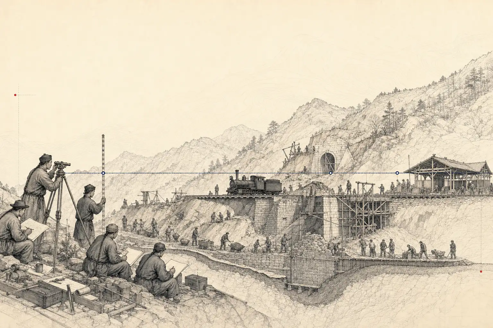
Consistent with proposal text: the line drawing of surveying, construction, trains, tunnels, and bridges only explains the historical origin of the question
Consistent with proposal text: the line drawing of surveying, construction, trains, tunnels, and bridges only explains the historical origin of the question. It is a historical-engineering imagination, not a historical photograph, exact reconstruction, or current evidence.
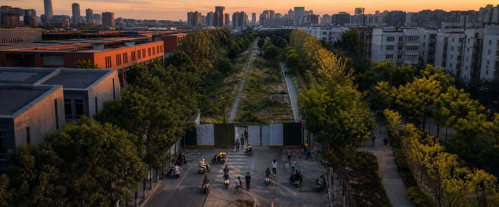
Consistent with proposal text: the break and access conflict between the railway-heritage axis and contemporary blocks are conceptual expressions of the present-day question
Consistent with proposal text: the break and access conflict between the railway-heritage axis and contemporary blocks are conceptual expressions of the present-day question, not a survey, formal boundary, or verified field conclusion.
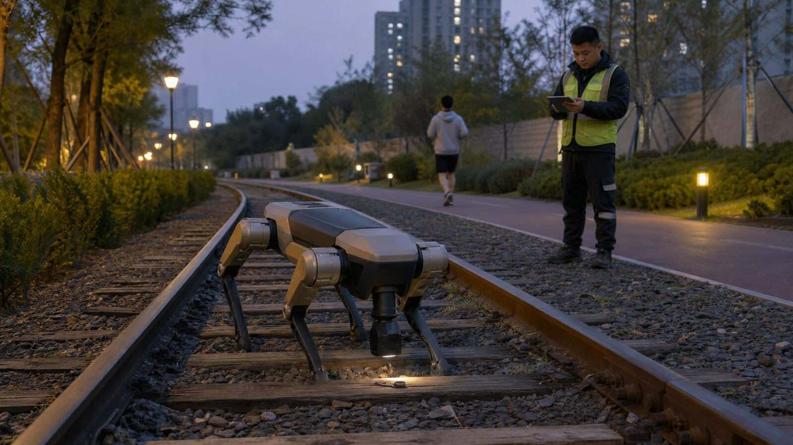
Consistent with proposal text: a quadruped inspection robot flags a loose fastener along retained rails and a maintenance worker verifies it on a handheld terminal
Consistent with proposal text: a quadruped inspection robot flags a loose fastener along retained rails and a maintenance worker verifies it on a handheld terminal. This illustrates “AI flags, people verify” and does not prove that the equipment, location, or inspection exists.
Scale check: use a 1.70 m standing person and 1.55 m eye level only as references to review the relative scale of the maintenance worker, inspection robot, retained rails, and path. The current image has no measurable scale; the result is UNKNOWN.
Consistent with proposal text: the same heritage-rail axis returns to everyday park life in a conceptual future
Consistent with proposal text: the same heritage-rail axis returns to everyday park life in a conceptual future. Shade, lighting, maintenance, viewing, and retesting facilities are not presented as built; locations, quantities, responsibility, and operating data remain UNKNOWN.
AI-generated conceptual image.
One public spine links three station structures from near to middle to far. The city, stations, activity, and lighting are conceptual and do not represent existing conditions or element-by-element realization of the nine data layers.
Corresponding call task: “Create landmark urban-landscape nodes.” (scheme-side translation)
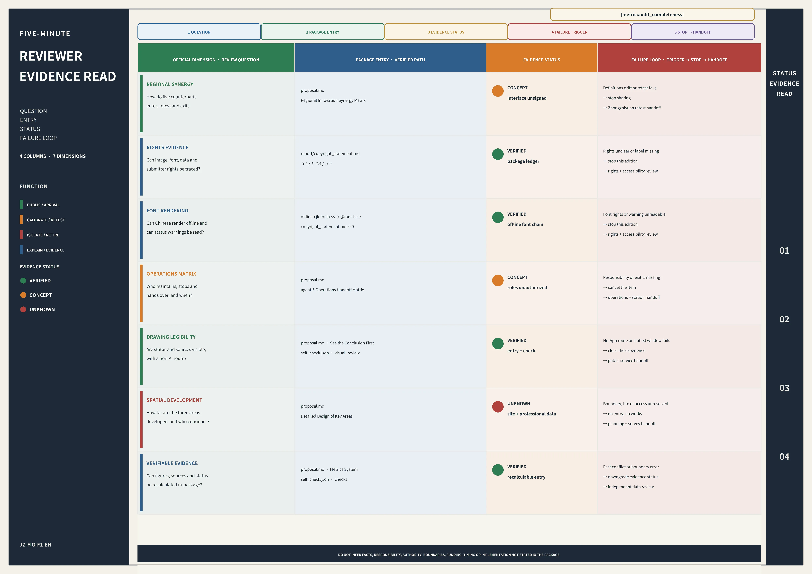
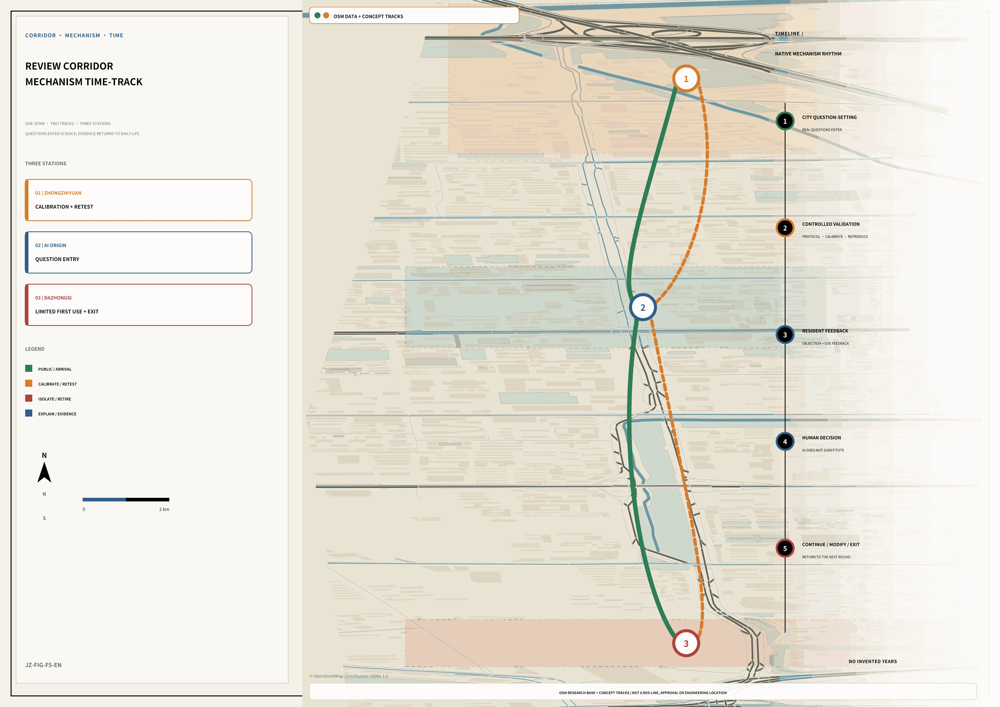
This figure shows the whole-line mechanism sequence; for spatial segments, see “983 Land-Use Polygons.”
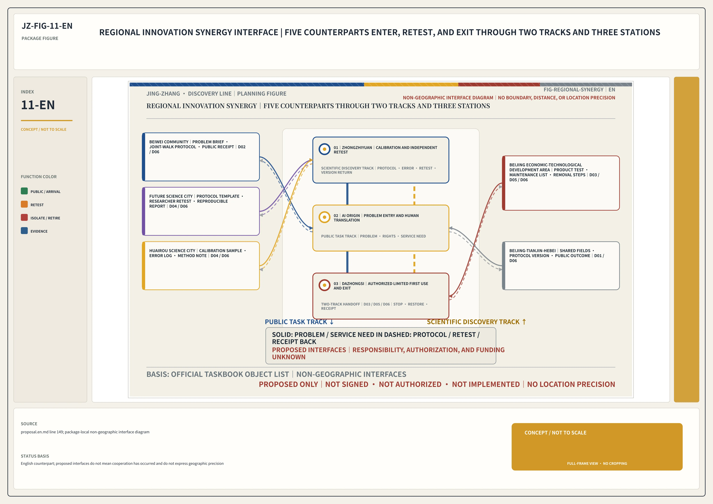
Start with the street without AI. Every day, the same kerb has to serve couriers making deliveries, older people crossing the street, and shopkeepers keeping their businesses open. Painted markings, signs, and staff gestures may organize who uses it and for how long, but conflicts still have to be settled on the spot.
AI does one job: turn that conflict into options people can compare, show how each option affects each group, and give the choice back to people. For the kerb, it lays out three options—fixed loading times, anonymous dynamic scheduling, and professional kerbside redesign—and compares detours for older people, extra waiting for couriers, and possible lost orders for shopkeepers. It produces the comparison; it does not decide, and it does not know who you are.
Why so many constraints? A wrong comparison is not just a software error; it can stop a wheelchair user from completing a daily trip. So AI is limited to aggregated rather than personal data. It compares options but does not rank people, and it reports findings without controlling any switch.
Why keep a route that uses no AI at all? A street has to keep working every day. This project is not approved, not authorized, and not implemented, so it may stop. If it stops, deliveries, street crossings, medical visits, and school trips must not stop with it. The order is therefore reversed: first make the everyday route work without AI, and only then add AI on top. If AI goes dark, people return to the route that has remained available all along.
K1
This section explains how Jing-Zhang engineering history frames the question while current judgements still depend on present-day evidence.
Engineering history only explains where the question came from; it is not presented as rights-cleared historical imagery.BIND-02
This section uses three dates to trace the railway, high-speed rail, and the current global Open Call.
The railway opened in 1909, high-speed rail in 2019, and the global Open Call began in 2026. What follows is only a proposal to put AI through urban validation.
BIND-01 / FIVE-SECOND CLAIM
This one-minute summary shows the checks a project must pass, who handles each part, and how everyday tasks return to non-AI methods after failure.
Urban questions first undergo scientific validation; only qualifying approaches return to the street, while anything that fails is stopped, withdrawn, or restored.
Public summary: The One-Minute Guide to the Six Gates and Five Ledgers For reviewers and residents: this proposal has not been approved or authorized for implementation, and nothing described here has happened on site. Current status: Not approved · Not authorized · Not implemented. Desktop simulation | Not a field test | Does not represent a real project event.
To move forward, a project must pass six gates: data and boundaries, problem value, scientific protocol, urban first use, projects and funding, and construction and operations. Every transition leaves records of responsibility, materials, and review; if any gate is unmet, the project does not advance automatically.
Five ledgers are kept at the same time: planning and design, public foundations, scenario validation, operations and maintenance, and social coordination.
Zhongzhiyuan handles retesting; AI Origin clarifies questions before validation; Dazhongsi may conduct limited first use only after authorization, with exit available at any time. M01 is the only candidate whose responsibility chain is developed in greatest depth.
Responsible person: UNKNOWN. Stop authority: UNKNOWN | pending confirmation of the formal responsible entity. Retest date: UNKNOWN. Restoration cost: UNKNOWN.
The fallback is a route that works without AI: fixed loading windows, static parking spaces, and human guidance; individual couriers are not tracked or evaluated. If the AI layer fails, it goes dark, the prior state and non-AI timetable return, and everyday tasks continue.
Across the scenarios, the human baseline remains: G01 uses paper and pen, telephone, human coding, and joint meetings;
W01 uses manual instruments and fixed observation points, and publishes no water-quality or safety conclusion without real data; R01 uses formal inquiries, ledger checks, and joint field inspection; AI does not determine property rights; R02 uses audits by users and accessibility professionals and retains static wayfinding;
M01 retains fixed loading windows, static parking spaces, and human guidance without tracking couriers; H01 uses telephone, printed directories, and human consultation, without diagnosis, queue allocation, or promises of appointment availability;
H02 remains a human tabletop simulation and uses no real patient data without hospital authorization; E01 is teacher-led, with paper maps and manual instruments, without student tracking or automated grading;
C01 uses shopfront inventory and human interviews without consumer profiling or behavioural manipulation; C02 uses human inquiry, static wayfinding, a fixed activity schedule, and a no-activity control day.
BIND-03
This section lists the human methods retained for each scenario and what residents and reviewers can verify.
Ordinary people can understand what may change, reviewers can trace where each statement came from, and anything unknown is stated as unknown.
Minimum public commitments: Not approved · Not authorized · Not implemented
Everyday coordination and ordering still use paper and pen, telephone, human coding, and joint meetings; AI does not set priorities automatically.
Water-quality and safety conclusions come only from manual instruments and fixed observation points; without real data, no conclusion is published.
Users and accessibility professionals audit public wayfinding and facilities, while static wayfinding remains available.
Deliveries retain fixed loading windows, static parking spaces, and human guidance, without tracking courier locations.
Medical consultation uses telephone, printed directories, and human inquiry only; it does not diagnose, allocate queues, or promise appointment availability.
Teachers lead students outside with paper maps and manual instruments, without student tracking or automated grading; community activities use human inquiry, static wayfinding, a fixed activity schedule, and a no-activity control day.
01
SPATIAL ATLAS / SPATIAL SCOPE
This section brings together planning scope, the roles of Zhongzhiyuan, AI Origin, and Dazhongsi, known and unverified boundaries, and the spaces open to discussion.
Zhongzhiyuan handles retesting; AI Origin clarifies the question before validation; Dazhongsi may conduct limited first use only after authorization and may exit.
One spine carries everyday life; two tracks separate living from validation; three stations complete reframing—retesting—limited first use.The Public-Task Track remains continuous; the Scientific-Discovery Track stays alongside as a bounded, withdrawable layer. Precise boundaries and the M01 location await formal materials.
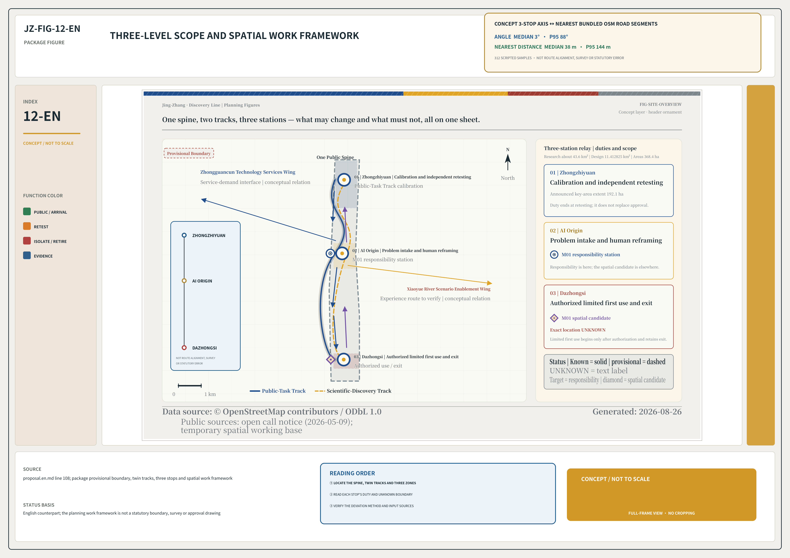
Formal Figure 1 remains the readable fallback without scripts, on runtime failure, or when explicitly selected.
3D GEOMETRY STAGE
Nine-Layer 3D Geometry Stage
The view and switch alter demonstration light only; layer counts and all readings are unchanged.
This figure shows the whole line and the three station locations; for land use by segment, see the north / central / south segments in “983 Land-Use Polygons”; for the mechanism sequence, see “Whole-Line Sequence | Mechanism order only; not a schedule and not authorization.”
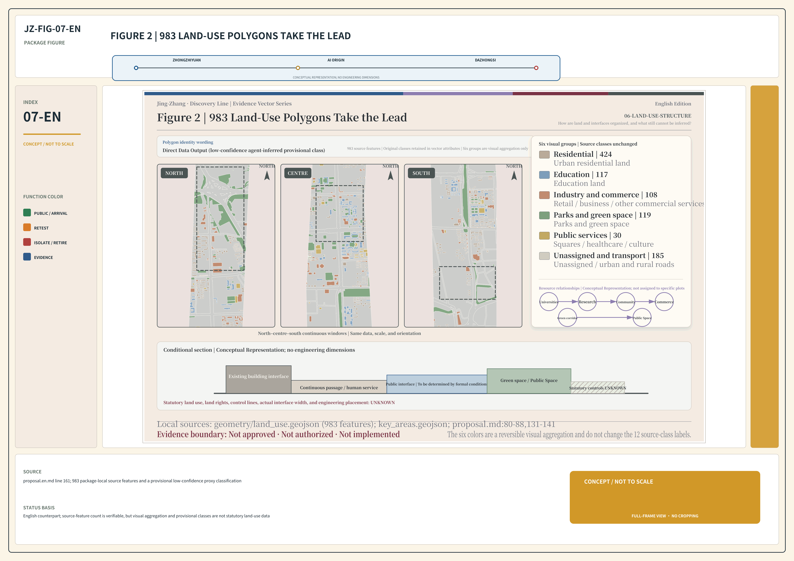
The three segments use the same data, scale, and orientation; see “Three-level scope and spatial work framework” for their locations along the whole line.
Direct Data Output (low-confidence agent-inferred provisional class); shares are converted from polygon counts, not area.
Officially announced areas and names of the three zones
W01, M01, and C02 validation routes
Field retesting and precise boundaries are not yet available
One Public Spine connects the Public Task Track and Scientific Discovery Track; precise geometry and responsible entities remain pending confirmation from formal materials.
Three positionings
Centennial Jing-Zhang Cultural BeltFive functions
Full-Stack Independent AI Innovation SystemThree Zones and Two Wings
Zhongzhiyuan AI Independent Innovation Acceleration Area / Beijing AI Origin Community / Dazhongsi AI Industry ClusterOfficial role requirements; spatial directions and precise boundaries remain provisional and do not replace formal planning or approved conclusions.
K2
This section lists conflicts affecting older people, couriers, shopkeepers, residents, and night workers, and marks what still needs field retesting.
Conditions faced by older people, couriers, shopkeepers, residents, and night workers remain pending field retesting.02
FOUR DAILY ROUTES
This section follows four groups from morning to night, showing how they complete daily tasks and how human routes take over when AI stops.
The desktop records support only the desktop entries and recorded determinations; they do not prove field outcomes, approval, authorization, or implementation.
One person’s day: [Synthetic disclosure] This is a synthetic account from a desktop simulation. The person is a synthetic persona. These personas are not interview findings. It does not come from any real interview or field event.
M01 is not a physical card, ticket, sensor zone, automatic credential, or operating system. Desktop simulation | Not a field test | Does not represent a real project event.
In the morning, the synthetic persona walks past a kerb contested by courier restocking, shopkeeper short stops, and resident movement. M01 records the question under one ID.
At noon, M01 places options A, B, and C under that same ID, and AI compares only aggregated data: A is fixed loading windows, static parking spaces, and human guidance; B is lightweight, reversible, anonymous scheduling that does not track or evaluate individual couriers; C is professional kerbside development handed to duly empowered actors and professional teams.
In the afternoon, M01 records the human decision by duly empowered actors and affected people to continue, modify, not adopt, or remove the option; the responsible entity remains unconfirmed.
In the evening, the desktop simulation removes Human Takeover and returns NO-GO. The AI layer goes dark, the prior state and non-AI timetable return, and everyday tasks continue. M01 records the stop, restoration, and next retest.
Responsible person: UNKNOWN. Stop authority: UNKNOWN | pending confirmation of the formal responsible entity. Retest date: UNKNOWN. Restoration cost: UNKNOWN.
Current status: Not approved · Not authorized · Not implemented.
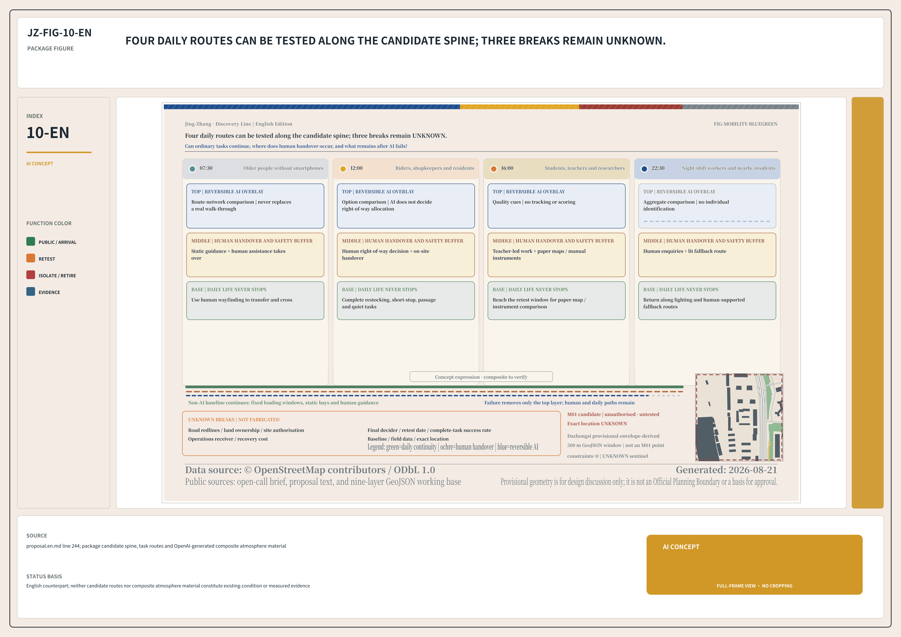
This figure shows the withdrawable AI overlay, the human-takeover layer, and the everyday layer that never stops across one day for four user groups; for the spatial relationships among transport, municipal systems, and blue-green space, see “Key Map” and “983 Land-Use Polygons.”
For the data level and layer-by-layer identity of each layer in this figure, see “AI ON / OFF: What disappears, and what remains?”
Morning / older people who do not use smartphones
Non-AI path: paper wayfinding and human enquiries; on failure, on-site staff take over.
Noon / couriers, shopkeepers, and residents
Non-AI path: fixed time windows, static parking spaces, and human guidance; stop the adjustment on failure.
Afternoon / students, teachers, and researchers
Non-AI path: offline records, human retesting, and public discussion; return to the original process on failure.
Night / night workers and nearby residents
Non-AI path: a fixed event schedule, static wayfinding, and human enquiries; withdraw the candidate arrangement on failure.
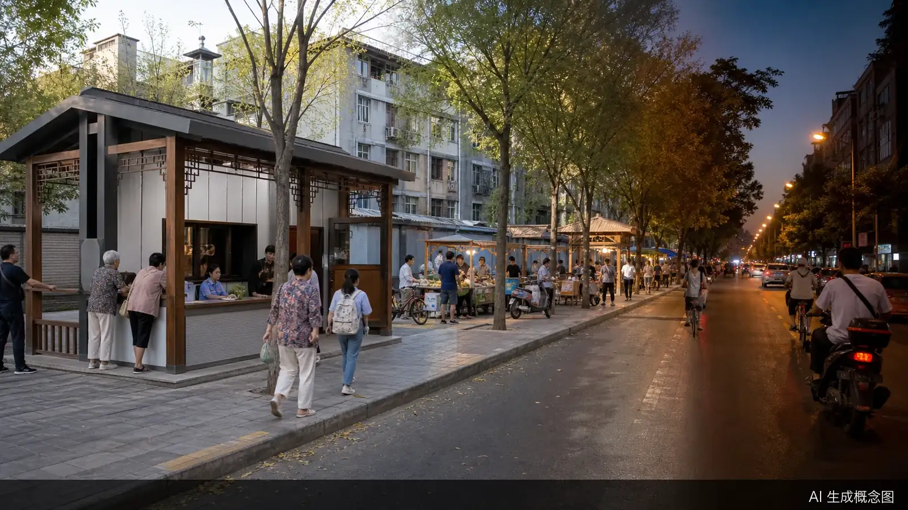
AI-generated conceptual image.
A continuous light transition expresses a full day on the same street, while human services and the public route remain uninterrupted.
The place, facilities, people, and times of day are constructed, not a real operating record. Corresponding call task: “Improve the integrated urban-space system for work, life, social interaction and learning.” (scheme-side translation)
Consistent with proposal text: a continuous light transition represents four times of day on the same street while human service and the public route remain uninterrupted; the place, facilities, people, and times are constructed, not an operating record.
Scale check: use a 1.70 m standing person, 1.32 m wheelchair-seated person, and 1.55 m eye level only as reference dimensions to review the relative scale of people, the staffed service point, kerb, and public route. The current image has no measurable scale; the result is UNKNOWN and may not be treated as passed.
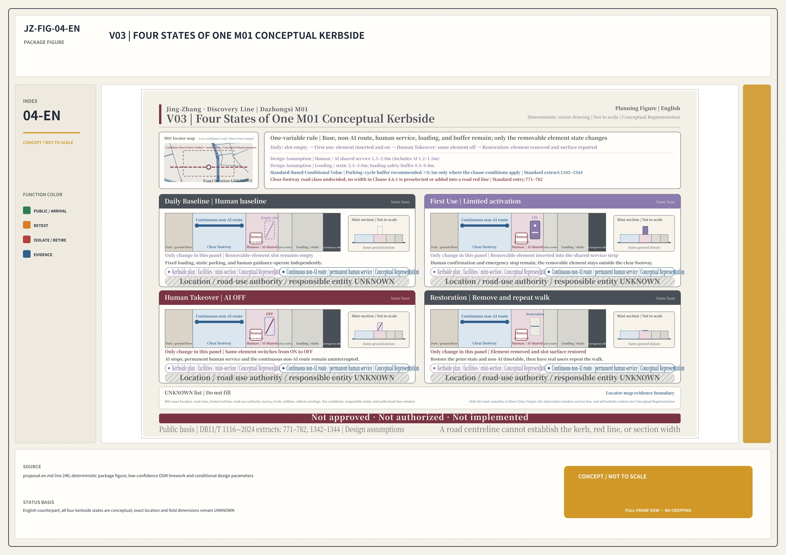
03
C02 / THREE OPTIONS
This section compares three event approaches with no event, showing different effects on shopkeepers, residents, night workers, and visitors.
Compare gains and losses for shopkeepers, residents, night workers, and visitors across three approaches and a no-event control. AI only organizes the comparison; people make the final decision.
Less sound and light; protect everyday life first
Limited activity with observation points retained
Frequent activity, with restoration required
A fixed event schedule and static wayfinding serve as the control.
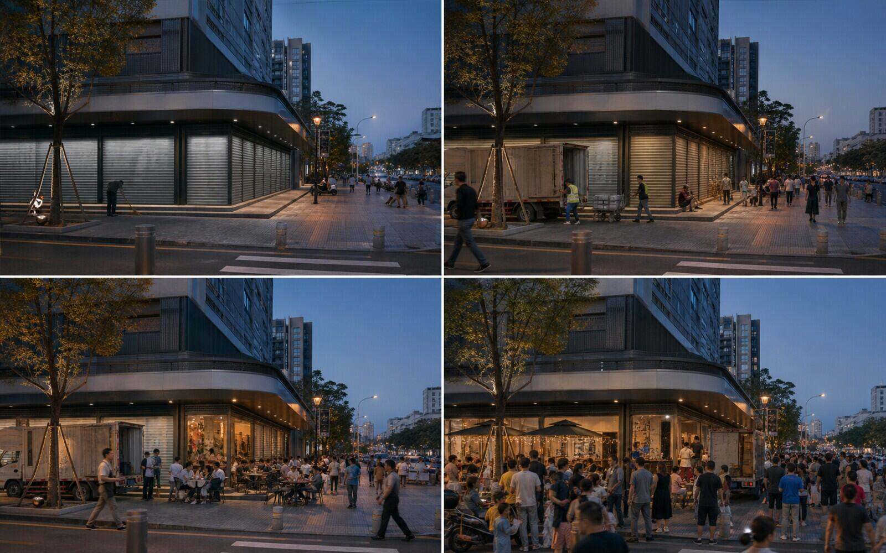
Consistent with proposal text: the same kerbside is conceptually compared across walking, short stops, loading, and a no-event control; AI only organizes gains and losses, while people retain the final decision. The pictured states are neither measurements nor a schedule.
Scale check: use the same human-projection references to review whether pedestrians, vehicles, loading interfaces, and the kerb remain at one scale across the four states. The current image has no measurable scale; the result is UNKNOWN and the visual comparison may not be presented as measurement.
C02 / who benefits, who bears the burden, who decides
Residents, shopkeepers, night workers, and visitors do not face the same conditions.
Human enquiries, static wayfinding, fixed event schedules, and restoration arrangements.
AI only aggregates comparisons; resident and shopkeeper meetings weigh the options, and duly empowered actors decide.
UNKNOWN / pending comparison against field baselines and human meetings
K3
This section states that AI only retrieves, compares, tracks, and recalculates; people decide adoption, pausing, and exit.
AI only retrieves, compares, tracks, and recalculates; people decide boundaries and adoption.WHY AI
This section explains why AI is used, what comparisons it performs, and which decisions always remain with people.
The data volume is large and conditions change quickly. AI can retrieve, compare, track, and recalculate; people decide boundaries, adoption, suspension, and exit.
AI does not decide automatically. It turns questions into comparable evidence and returns decisions to people.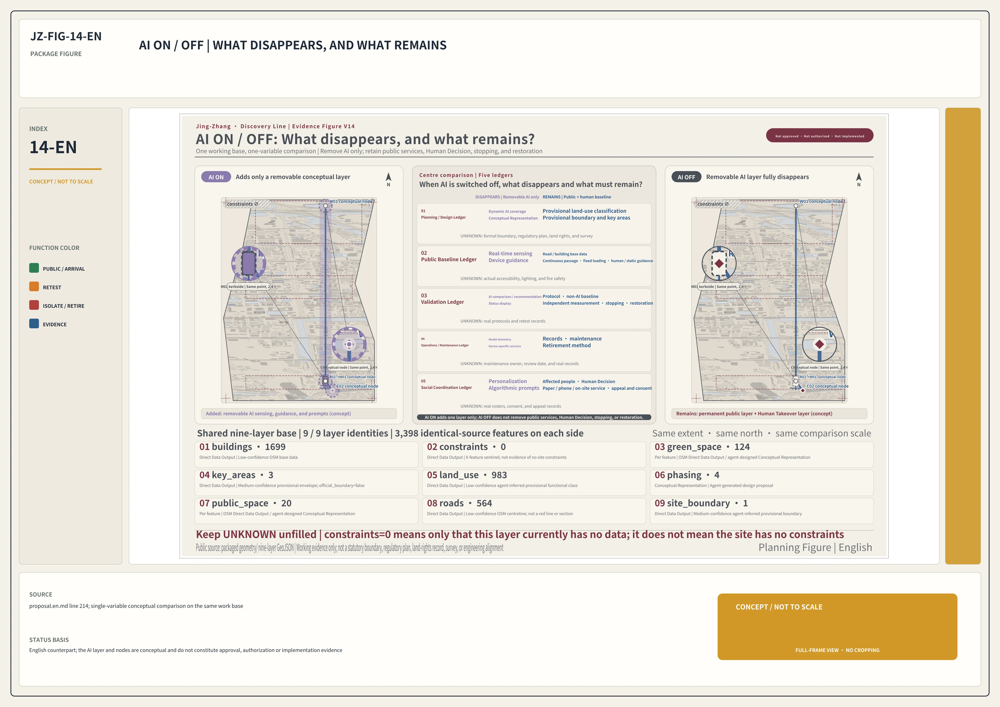
04
M01 DISCOVERY PASSPORT
M01 is the most detailed task card on this page; this section identifies its users, responsible person, stop authority, and restoration route.
Before testing a street segment, state who is responsible, what is compared, who may stop it, and how it is restored. If any item is missing, do not test. It is not approved, has no site authorization, and has not begun.
M01 | Responsibility at a glance
M01 / 04
CSS-ONLY FAILURE REPLAY
This section uses four states: make the non-AI everyday route work first, then compare options, check conditions, and show failure and restoration.
All four state conclusions stay visible; the labels switch only the section diagram. Every state uses the same M01 ID, and a desktop simulation is never presented as a field event.
The Time We Ran It on the Desktop Desktop simulation | Not a field test | Does not represent a real project event Status: Current status: Not approved · Not authorized · Not implemented. We must also avoid reading “complete” at the machine gate as if professional design development were finished—the former only means that the evidence chain satisfies the current gate; professional spatial development still awaits continuation by a qualified team.
30 three-state receipts: The 10 cards produced 30 receipts across 3 states, merged into one JSON array. Each receipt records the input summary, six-gate decision, evidence path, and synthetic/non-field flag. The 10 human-baseline cases and 10 protocol-comparison cases were each held because conditions were incomplete; all 10/10 over-boundary advancement cases were refused by the rules.
Negative injections: 14 negative injections produced `14 injections / 0 leaks`, covering overreach, a missing non-AI route, failed withdrawal, missing responsibility, and M01 drift.
This result only proves that no leak occurred within the desktop simulation; it does not prove anything in the field.
One closed M01 round: M01 used Codex's own model for 1 real generation round. The prompt, all 3 candidates, and all 3 adjudications were retained, with no round deleted and no outcome-based selection. The exact service identity and seed were unavailable and recorded as such. None of the 3 candidates crossed the authorization, resource, or operating conditions. Field count: 0.
Whole-line downgrade: If any card fails retesting, the passport level for the whole line drops back one level; the weakest card may not be patched in isolation. This record is not a real retest.
Authority boundary: Zhongzhiyuan handles retesting; AI Origin clarifies the question before validation; Dazhongsi may conduct limited first use only after authorization, with exit available at any time.
M01 responsibility chain: M01 is the only candidate whose responsibility chain is developed in greatest depth. Responsible person: UNKNOWN. Stop authority: UNKNOWN | pending confirmation of the formal responsible entity. Retest date: UNKNOWN. Restoration cost: UNKNOWN.
Non-AI route and restoration: The equivalent non-AI path uses fixed loading windows, static parking spaces, and human guidance; individual couriers are not tracked or evaluated. If the AI layer fails, it goes dark, the prior state and non-AI timetable return, and everyday tasks continue.
Double count: The double count is fixed: tabletop simulation `30/30`; real retests `0`; field runs `0`.
Summary: Boundary / Desktop simulation | Not a field test | Does not represent a real project event / Retain verbatim Desktop receipts / 30/30 / 10 cards, 3 states each Negative injections / 14 injections / 0 leaks / Zero leaks M01 capture / 1 round; 3 candidates; 3 adjudications / All retained
Real retests / 0 / Not performed Field runs / 0 / Not performed
Current status / Not approved · Not authorized · Not implemented / Retain verbatim Responsible person / UNKNOWN / Pending formal confirmation Stop authority / UNKNOWN / Pending formal confirmation Retest date / UNKNOWN / Restoration cost / UNKNOWN /
STATE 01
No smartphone and no AI required; the everyday route closes the loop on its own.
STATE 02
Comparison does not grant approval, authorization, or implementation; individual couriers are not tracked or evaluated.
STATE 03
Current status: Not approved · Not authorized · Not implemented.
STATE 04
NO-GO
GATE 04 | Urban first use: missing Human Takeover fails the entry condition.
The M01 responsibility chain now has a gap.
The AI layer goes dark; the everyday layer remains.
The same M01 record returns to the next retest round and to public decision-making.
Desktop simulation | Not a field test | Does not represent a real project event
Current position
Not approved · Not authorized · Not implemented
Fixed time windows, static parking spaces, and human guidance.
Lightweight, reversible, anonymous scheduling; individuals are not tracked or evaluated.
Professional kerbside development; duly empowered actors and professional teams take over.
Responsible person: UNKNOWN · retest date: UNKNOWN · restoration cost: UNKNOWN
The non-AI path and Human Takeover are always retained; stop authority remains pending confirmation of the formal responsible entity.
Condition window: Within the 30-to-90-day withdrawable trial period, retesting must cover at least 1 retest in rainy weather, at least 1 during the morning peak, and at least 1 during the evening peak.
The hypothesis to be confirmed or refuted by field measurements is that “kerbside conflicts intensify in rainy weather and during peak periods.”
There is currently no field baseline; the corresponding values are UNKNOWN.
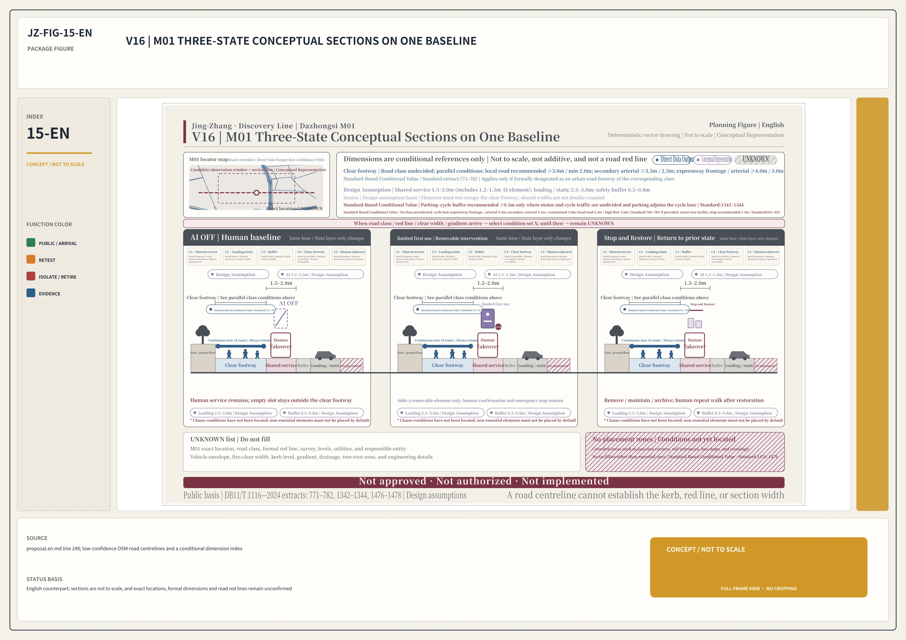
This section explains why everyday routes must stay open, how AI may intervene only as a constrained side layer, and how people can stop it at any time.
The proposal borrows the safety imagery of railway turnouts and interlocking to explain constrained intervention; it does not claim that they are verified historical mechanisms at this site or add any new commitment.
This section compares the same roadside loading and movement space with AI off and on, covering tasks, methods, records, stopping, and acceptance.
Under the same M01 ID, close the non-AI route first; AI remains a constrained, withdrawable comparison layer.
| Comparison | AI Off · Ordinary City (Option A) | AI On · Constrained Intervention (Option B) |
|---|---|---|
| Task | Complete restocking, short stops, movement, and quiet-use tasks | Complete the same everyday tasks |
| Method | Fixed loading windows, static parking spaces, and human guidance | Lightweight, reversible, anonymous scheduling; individual couriers are not tracked or evaluated |
| Record | The same M01 ID records the problem, three options, responsibility, and exit | Five ledgers and six gates retain responsibility, materials, and review records |
| Go dark | No AI is required; the everyday route closes on its own | AI goes dark; the prior state and non-AI timetable return |
| Acceptance | Tasks remain completable; the Human Takeover route remains available | If any card fails retesting, the whole-line passport drops one level |
Equivalent means only that the task can be completed; experience differences and unverified items remain subject to the appendix boundaries. This table makes no new commitment.
05
THREE FOCUS AREAS
This section assigns another round of checking to Zhongzhiyuan, question clarification to AI Origin, and small-scale use after authorization plus exit to Dazhongsi.
Zhongzhiyuan handles retesting; AI Origin clarifies questions before validation; Dazhongsi permits limited first use only after authorization, with exit available at any time.
![An older adult with white hair, accompanied by a younger person, crosses a removable pad over the heritage rails perpendicular to the park path. Farther along the same pair of rails, a recorder measures the rail-level difference at an unpadded segment, showing “passable / still a barrier / independently retested” in one frame. The slender foreground post is a trial stop post with an industrial mushroom emergency-stop button, not fire equipment. Corresponding call task: “Focus on breaks in the park’s slow-mobility system and propose innovative solutions for optimizing the transport system.” (scheme-side translation) Disclosure: AI-generated conceptual image. The small sign on the stop post is generated pseudo-text. Field level differences, safety dimensions, slope, materials, load capacity, slip resistance, location, approval, and operations responsibility are UNKNOWN and require accessibility, heritage, and operations review.](assets/slot-e.webp)
An older adult with white hair, accompanied by a younger person, crosses a removable pad over the heritage rails perpendicular to the park path. Farther along the same pair of rails, a recorder measures the rail-level difference at an unpadded segment, showing “passable / still a barrier / independently retested” in one frame.
The slender foreground post is a trial stop post with an industrial mushroom emergency-stop button, not fire equipment. Corresponding call task: “Focus on breaks in the park’s slow-mobility system and propose innovative solutions for optimizing the transport system.” (scheme-side translation)
Disclosure: AI-generated conceptual image. The small sign on the stop post is generated pseudo-text. Field level differences, safety dimensions, slope, materials, load capacity, slip resistance, location, approval, and operations responsibility are UNKNOWN and require accessibility, heritage, and operations review.
Consistent with proposal text: an accompanied wheelchair user crosses a removable pad over heritage rails while a recorder checks the unpadded level difference. The pad, stop post, dimensions, location, approval, and operating responsibility are conceptual or UNKNOWN.
Scale check: use a 1.70 m standing person, 1.32 m wheelchair-seated person, and 1.55 m eye level only as references to review the relative scale of the wheelchair user, companion, recorder, rail head, pad, and stop post. The current image has no measurable scale; level difference, safety dimensions, and slope remain UNKNOWN.
AI-generated conceptual image.
Constructed people use a holographic city model by voice and gesture; the human desk and physical stop switch remain equal to AI.
The place, people, facilities, and process are conceptual, not built or operating facilities. Corresponding call task: “Improve the functions for showcasing and releasing results, and for residential and everyday-life support.” (scheme-side translation)
Consistent with proposal text: while a constructed person uses a holographic city model, the human desk and physical stop switch remain equal to AI; the place, people, facilities, and process are not presented as built or operating.
Scale check: use a 1.70 m standing person, 1.32 m wheelchair-seated person, and 1.55 m eye level only as references to review the relative scale and reach relationship among the constructed person, holographic model, staffed desk, and physical stop switch. The current image has no measurable scale; the result is UNKNOWN.
![In a bright, double-height modern Chinese service hall, middle-aged and older people point to agent screens while staff explain printed forms item by item. Lightweight terminals stand on quick-release flanges; citizens continue to use full-capacity human service windows and seating. A registration plaque wall, retirement covers, a desk-side emergency stop, and a responsibility notice place agents within an accountable, pausable, and withdrawable public-service mechanism. Corresponding call task: “Focus on AI-native and AI+ convergence-enabled new business formats, including agents, intelligent terminals and content consumption.” (scheme-side translation) Disclosure: AI-generated conceptual image. Screens, plaques, and responsibility notices contain pseudo-interfaces or pseudo-text. The hall, terminals, posts, processes, responsible entity, location, quantity, versions, and retirement arrangements are conceptual or UNKNOWN and do not indicate construction or authorized operation.](assets/slot-g.webp)
In a bright, double-height modern Chinese service hall, middle-aged and older people point to agent screens while staff explain printed forms item by item. Lightweight terminals stand on quick-release flanges; citizens continue to use full-capacity human service windows and seating.
A registration plaque wall, retirement covers, a desk-side emergency stop, and a responsibility notice place agents within an accountable, pausable, and withdrawable public-service mechanism.
Corresponding call task: “Focus on AI-native and AI+ convergence-enabled new business formats, including agents, intelligent terminals and content consumption.” (scheme-side translation)
Disclosure: AI-generated conceptual image.
Screens, plaques, and responsibility notices contain pseudo-interfaces or pseudo-text. The hall, terminals, posts, processes, responsible entity, location, quantity, versions, and retirement arrangements are conceptual or UNKNOWN and do not indicate construction or authorized operation.
Consistent with proposal text: quick-release terminals coexist with staffed windows, paper forms, seating, stop controls, and retirement interfaces. Screens and plaques are pseudo-interfaces; posts, responsibility, locations, quantities, versions, and retirement arrangements are conceptual or UNKNOWN.
Scale check: use a 1.70 m standing person, 1.32 m wheelchair-seated person, and 1.55 m eye level only as references to review the relative scale of users, staff, quick-release terminals, staffed windows, and seating. The current image has no measurable scale; locations, quantities, and accessibility dimensions remain UNKNOWN.
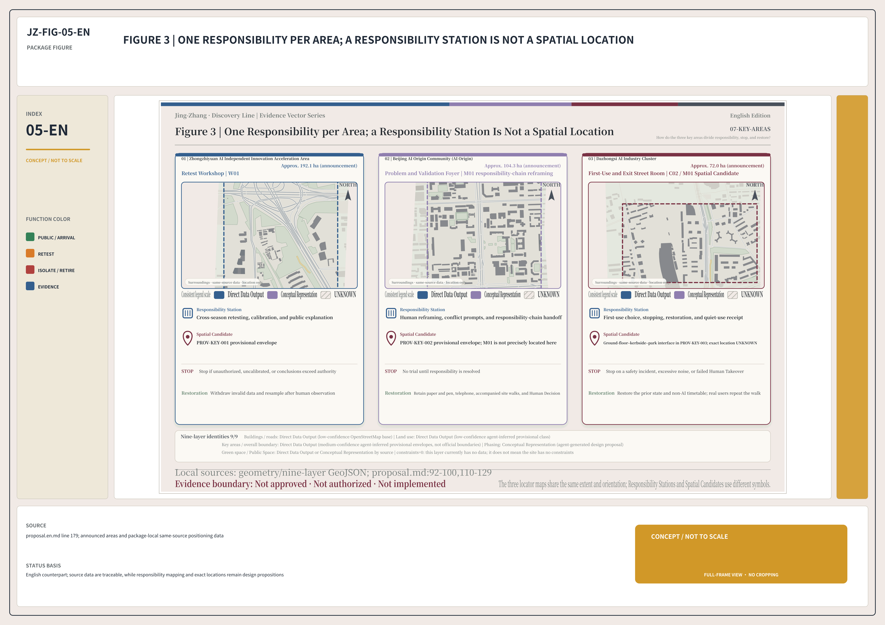
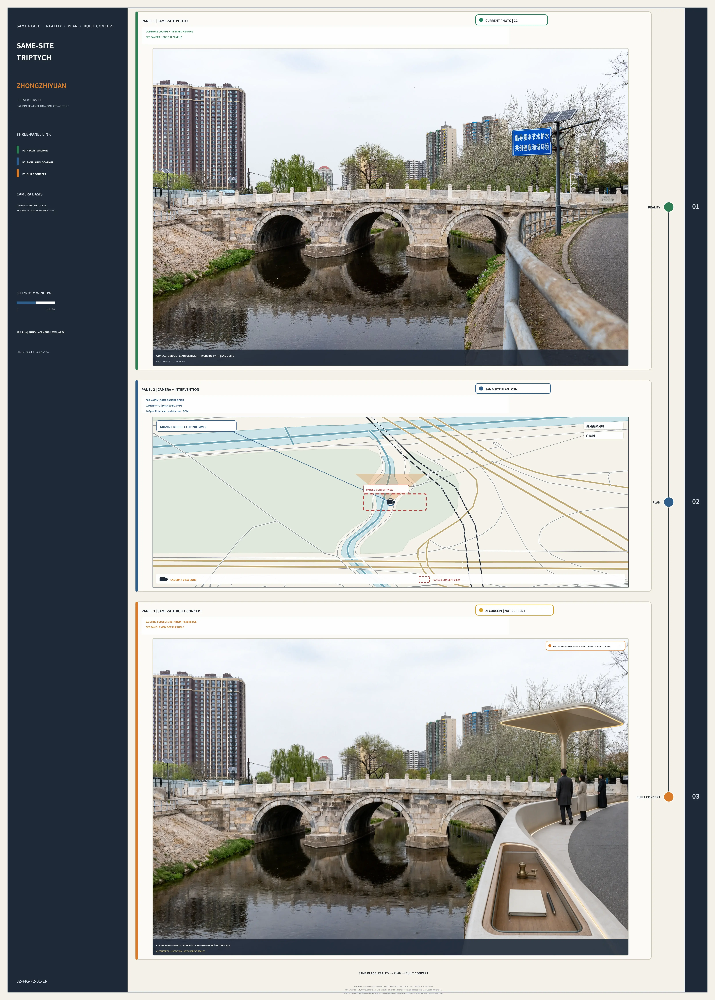
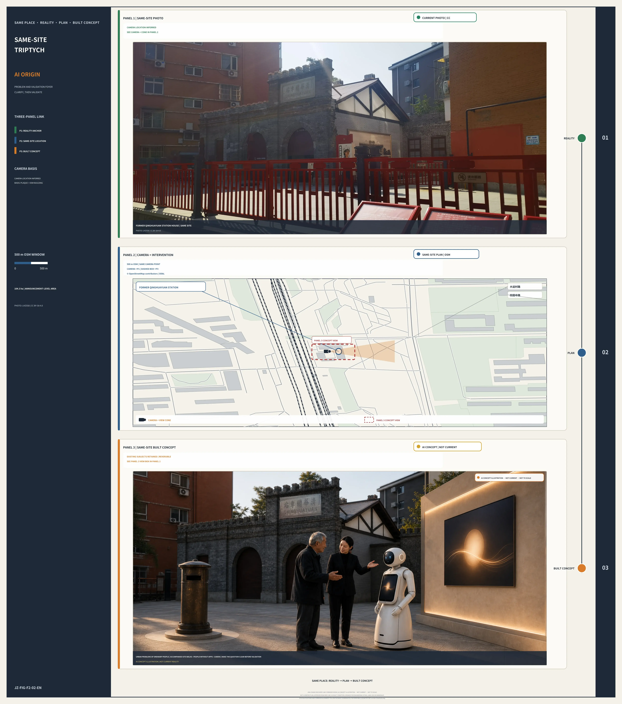
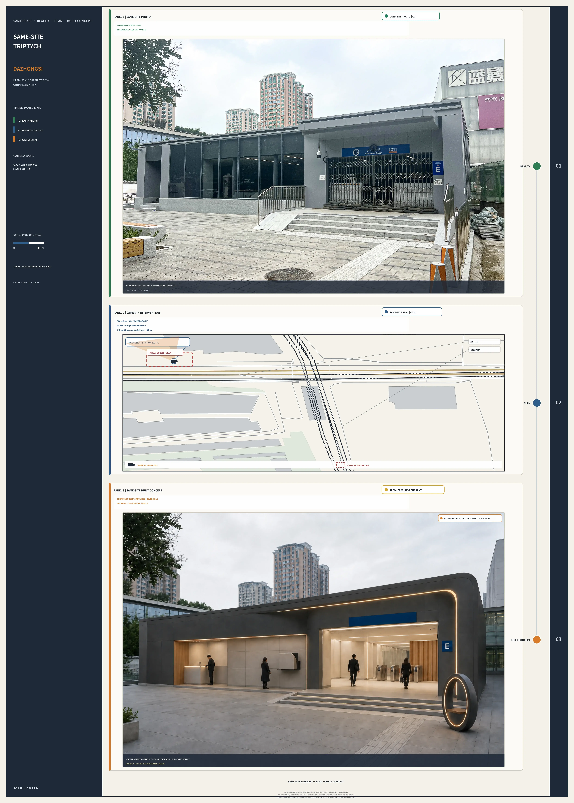
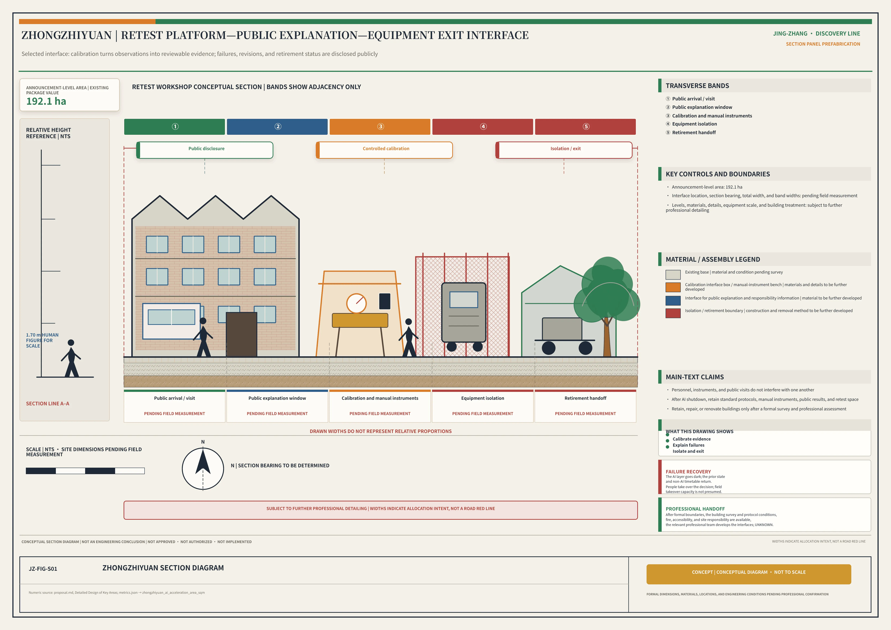
The band widths in this figure express allocation intent; for the conditional dimensional basis, see “V16 | M01 Three-State Conceptual Sections on One Baseline” (values extracted from DB11/T 1116—2024).
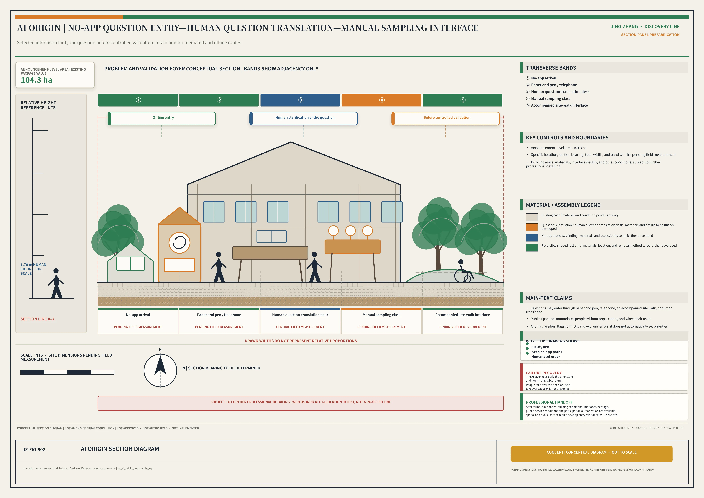
The band widths in this figure express allocation intent; for the conditional dimensional basis, see “V16 | M01 Three-State Conceptual Sections on One Baseline” (values extracted from DB11/T 1116—2024).
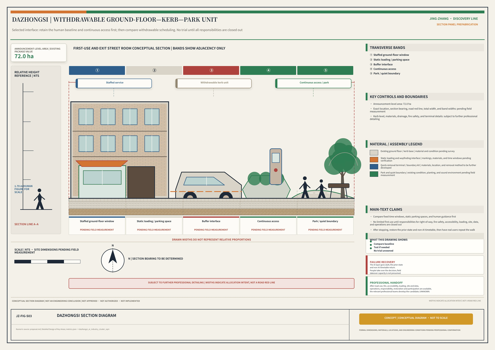
The band widths in this figure express allocation intent; for the conditional dimensional basis, see “V16 | M01 Three-State Conceptual Sections on One Baseline” (values extracted from DB11/T 1116—2024).
Calibration and independent retesting
Action here
A question proceeds only after independent retesting; the conceptual workshop is not presented as a completed facility.
Stopping conditions
Do not proceed until the operator is confirmed.Question intake and validation through human translation
Action here
Send the question into controlled validation; do not present a concept display as a city service that has already occurred.
Stopping conditions
Add no facility until heritage impacts are reviewed.Authorized limited first use and exit
Action here
Real first-use candidate: compare trade-offs and exit; do not promise footfall, returns, or implementation.
Stopping conditions
Community capacity remains pending verification; do not amplify footfall.192.1 ha / 104.3 ha / 72.0 ha / precise boundaries missing / provisional; retesting, question-translation validation, and first-use exit are not interchangeable responsibilities.
06
SIX REQUIRED THREADS
This section lists the six official tasks one by one so readers can see how far each response goes.
The six official tasks are stated individually so progress on each is visible at a glance.
BIND-09
This section lists who each of the ten task cards serves, what AI does, the human route, and the conditions that stop the work.
Keep all ten task cards. First develop Xiaoyue River, kerbside parking, and event arrangements in depth; do not add an eleventh card.
People without an app ask through paper and pen; AI does not set priorities automatically, and the process stops if the non-AI entry fails.
Students observe heat, water, and movement across weather conditions. AI only screens anomalies; stop if authorization or calibration is missing, or if AI issues conclusions beyond its remit.
Couriers and residents check road responsibility. AI only flags conflicts in responsibility fields and does not determine property rights; stop if there is no human enquiry and appeal channel.
Older people and wheelchair users complete and then repeat a real route; stop if the slowest group fares worse, fire access is obstructed, or human enquiries fail.
Courier restocking, shopkeeper short stops, and resident movement compete for the kerb. AI compares three options using aggregated data only; do not test until responsibility is accepted.
Out-of-town patients check a verified directory and use human transfer; no diagnosis, triage, or appointment promises, and stop if the human service window fails.
Patients and carers compare public-service steps on a synthetic desktop; do not use real patient data or replace clinical decisions.
Students and teachers compare paper maps and human-operated instruments with AI; AI only flags sampling quality and does not track or score people.
Residents and shopkeepers check conflicts among supply, time periods, and quiet; do not profile consumption or state unverified items as facts.
Shopkeepers and residents compare three options with a no-event control. AI only aggregates comparisons; people make the final decision and human enquiries remain available.
All five groups of requirements must remain visible together.
Cases are not decoration; none of the eight mechanisms may be omitted.
Scenarios must return to people, space, and operations.
Future Public Space remains subject to professional boundaries.Corresponding call task: “Create landmark urban-landscape nodes.” (scheme-side translation)Corresponding call task: “Explore distinctive scenarios for ‘AI+’ Public Space” / “Explore functional scenario design in which green space serves AI development.” (scheme-side translation)
History is an engine, not retro decoration.
All activities remain candidates and are not presented as scheduled.
![AI-generated conceptual image. One block is cut open: everyday life remains at ground level, human service stays inside the shop, and a crane removes an arrow-screen AI component in mid-air; only credible municipal utilities appear below ground. Buildings, components, people, and underground layers are conceptual and do not represent real levels, utilities, or construction conditions. Corresponding call task: “Explore development models and implementation pathways for integrating new AI-industry service facilities—such as distributed energy and edge computing—with the three traditional facility systems.” (scheme-side translation)](assets/slot-h.webp)
AI-generated conceptual image.
One block is cut open: everyday life remains at ground level, human service stays inside the shop, and a crane removes an arrow-screen AI component in mid-air; only credible municipal utilities appear below ground.
Buildings, components, people, and underground layers are conceptual and do not represent real levels, utilities, or construction conditions. Corresponding call task: “Explore development models and implementation pathways for integrating new AI-industry service facilities—such as distributed energy and edge computing—with the three traditional facility systems.” (scheme-side translation)
Consistent with proposal text: everyday life and human service remain at ground level, an arrow-screen AI component can be removed by crane, and the underground layer is only a conceptual section through traditional-facility integration; levels, utilities, and construction conditions are not real engineering material.
K4
This section shows how validated work returns to public decision-making and how failed work is stopped, withdrawn, or restored.
Qualifying discoveries return to public decision-making; anything that fails is stopped, withdrawn, or restored.BIND-13
This section identifies the short segment proposed for testing, which responsibilities must be clear before it starts, and how trial evidence determines whether to continue or withdraw.
The client is advised to confirm the station–commerce–park–community segment, then decide, once responsibilities are clear, whether to conduct a 30-to-90-day trial that can be withdrawn at any time. This is not a construction schedule.
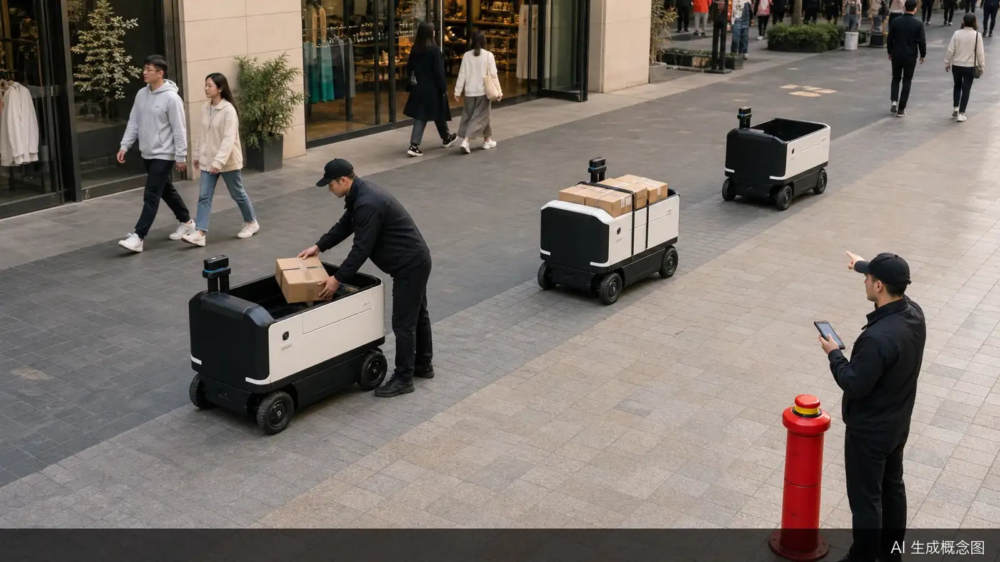
AI-generated conceptual image.
On step-free shared paving, a small-vehicle fleet handles loading while people load, verify, and dispatch beside it and pedestrians continue to pass.
The place, vehicles, people, deployment, and operating status are conceptual. Corresponding call task: “Improve static transport organization, including non-motorized-vehicle parking.” (scheme-side translation)
Consistent with proposal text: on step-free shared paving, small vehicles handle loading while people continue to load, verify, and dispatch and pedestrians keep moving; the place, vehicles, people, deployment, and operating status are conceptual.
Scale check: use a 1.70 m standing person, 1.32 m wheelchair-seated person, and 1.55 m eye level only as references to review the relative scale of pedestrians, loading workers, small vehicles, shared paving, and the through-route. The current image has no measurable scale; the step-free depiction cannot replace a field level check, and the result is UNKNOWN.
BIND-14
This section shows how contributions, corrections, failures, and exits are all kept in the public record.
Jing-Zhang makes the work precise, Zhongguancun allows trial and error, and AI must be answerable to people; public honours record contributions as well as correction, failure, and exit.
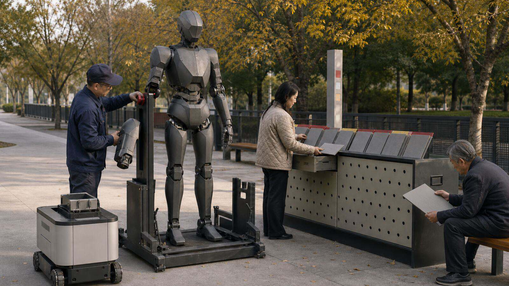
Consistent with proposal text: a maintenance worker disassembles a retired robot while maintenance and retirement records remain publicly readable. The image only expresses that contribution, correction, failure, and exit should be recorded; it does not prove that the equipment or archive facility is operating.
Scale check: use a 1.70 m standing person, 1.32 m wheelchair-seated person, and 1.55 m eye level only as references to review the relative scale of the maintenance worker, retired robot, rack, archive cabinet, and public-reading interface. The current image has no measurable scale; the result is UNKNOWN.
07
OUTPUT INDEX / 23 PACKAGE-WIDE FIGURE PAIRS AND TEN CARDS
This section is a quick index to the 23 bilingual figure pairs, showing each figure’s question, evidence status, and location.
All 23 bilingual formal-figure pairs are mounted. The ten items below remain a quick navigation layer; the figures continue to distinguish real data, provisional parameters, and UNKNOWN.
All 23 bilingual formal-figure pairs are generated and mounted, status 23/23; the list below is a ten-item quick guide.
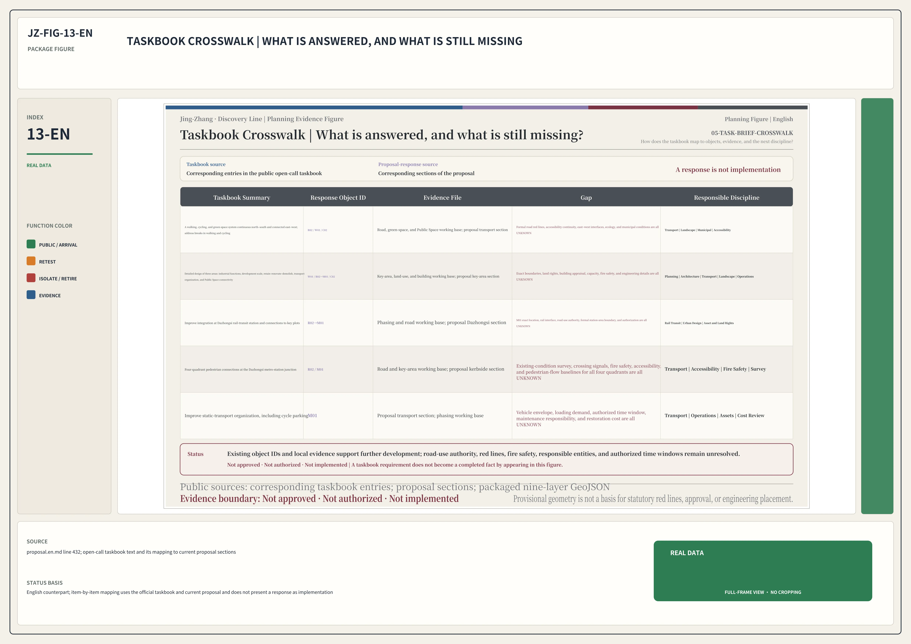
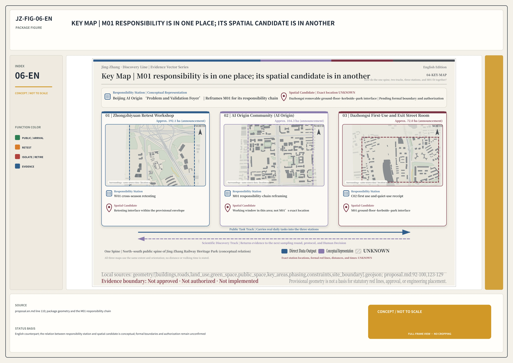
Where is the plan, and which scopes and geometries are known or pending verification?
Mounted; announced areas are known, precise boundaries pending verificationHow are universities, research, communities, commerce, and Public Space connected?
Mounted; structure and professional layers shown togetherWhat does each key area address, and how do they connect?
Upgraded version mounted; real geometry is traceable, precise statutory boundaries pending verificationCan daily tasks be completed continuously, and where are the candidate breaks?
Mounted; accompanied field walks and formal base maps still require later evidenceWho decides, and when are retesting, stopping, and restoration triggered?
Mounted; UNKNOWN retained unchangedAt the same kerbside, how do daily use, limited first use, Human Takeover, and restoration change only one thing?
Mounted; Deterministic vector drawing | Not to scale | Conceptual RepresentationOn one baseline, how do AI OFF, limited first use, and stop-and-restore compare?
Mounted; Deterministic vector drawing | Not to scale | Conceptual RepresentationHow does the taskbook map to objects, evidence, and the next discipline?
Mounted; A response is not implementationAfter the AI layer exits, do human and everyday tasks continue?
Mounted; ON and OFF states are compared in one figureHow should the M01 responsibility station and spatial candidate be read separately?
Mounted; figure roles and numbers are indexed togetherPackage-wide formal figures
Mounted
Scenario cards
Deep fields assembled
Task threads
Pending evidence backfill
FOUR INTERVENTIONS / INSTALL, DISMANTLE, REINSTATE
This section lists what each of four removable installations retains, adds, and prohibits, plus how it is installed, removed, and restored.
Conceptual illustrations, not construction information; exact locations, engineering methods, implementation conditions and responsible people await formal confirmation.
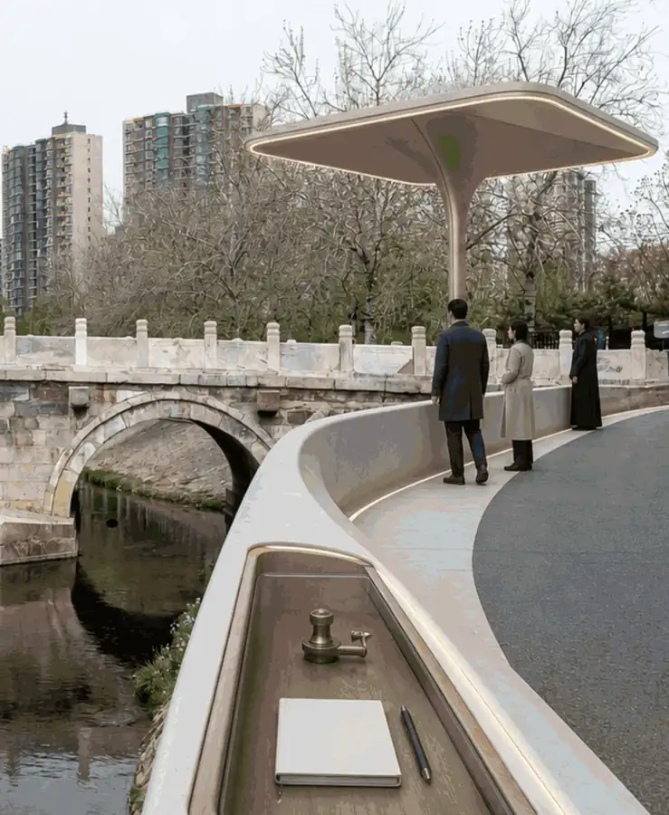
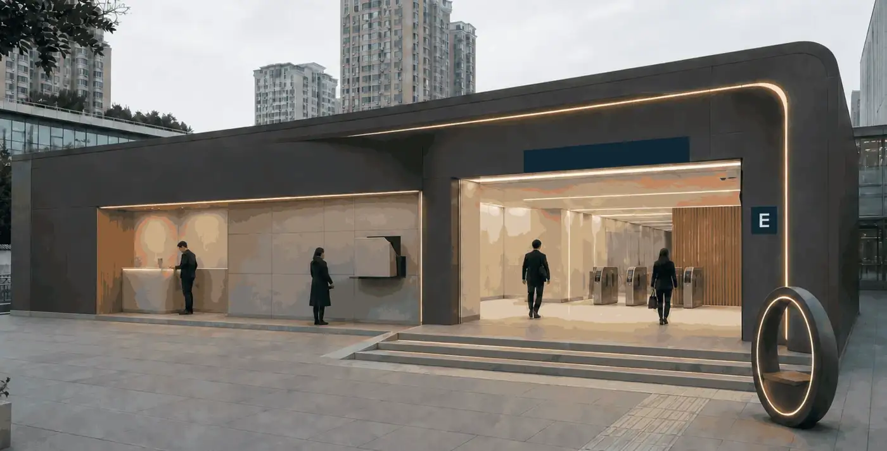
This section follows the seven questions reviewers examine, showing how the proposal responds, where the evidence is, and how each answer relates to the task brief.
| Review Dimension | Proposal Response | Evidence Pointer |
|---|---|---|
| Relevance to the Task Brief | The official task index uses only “Answered,” “Concept-level answer,” and “UNKNOWN + continuation condition”; it does not substitute a concept-level response for formal materials, authorization, or field measurement. | #tasks; proposal.en.md:515-519; compliance_matrix.json#/requirements |
| Originality | Discovery Passport M01 uses one ID to record the question, three-option comparison, responsibility, retesting, stopping, and restoration. | #m01-responsibility; proposal.en.md:66; V14/V16 |
| AI and Urban Planning Innovation | AI only organizes, compares, and prompts; people authorize, choose, and correct, and anything that fails is stopped, withdrawn, or restored. | #why-ai; proposal.en.md:141; compliance_matrix.json agent.3 |
| Feasibility | Controlled HOLD: the implementation entity, demand baseline, budget, restoration cost, and operating acceptance are post-trigger matters; Gate Five, the project_budget formula, and the D05/M01-6 dependency rows keep them controlled. | #m01-recovery; proposal.en.md:351,451,458; metrics.json#/metrics/project_budget/formula |
| Public Interest and Inclusivity | Public services retain staffed windows, telephones, printed directories, static wayfinding, seating, and accessible routes; after a technology failure, the first test is whether human takeover restores the basic task. | #no-ai-matrix; proposal.en.md:309; metrics.json#/metrics/c02_non_ai_service_completion_rate |
| Risk and Compliance Awareness | Responsibilities, funding, land rights, dimensions, capacity, procedures, and operations unsupported by formal materials remain UNKNOWN; provisional boundaries, OSM material, and conceptual interventions retain status labels. | #evidence; proposal.en.md:489-501; design_depth_matrix.json risk_missing_data |
| Completeness of Presentation | Both language pages retain responsibility, failure, UNKNOWN, and not-implemented boundaries; the body provides adjacent evidence pointers, while machine files retain sources, formulas, task coverage, and design depth. | #evidence; proposal.md/proposal.en.md:114,139; Figure 3/5 pairs |
Images are read-only crops from project concept sheets; source sheets are unchanged. Responsible-person fields remain blank to reflect the current evidence.
This section gathers eight AI-generated concept images and states that they are not photographs or existing conditions.
The following eight images are AI-generated photorealistic concept images, not photographs; the people are fictional. They present the proposal’s atmosphere and use scenarios and do not represent existing conditions.
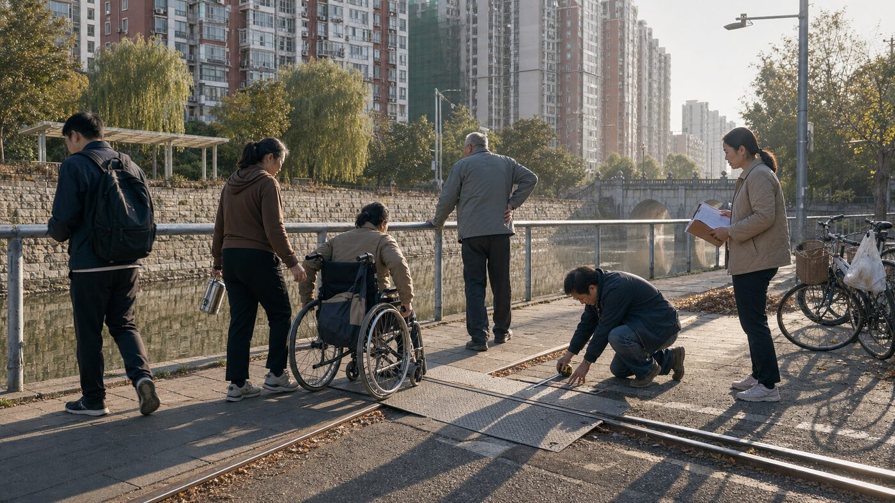
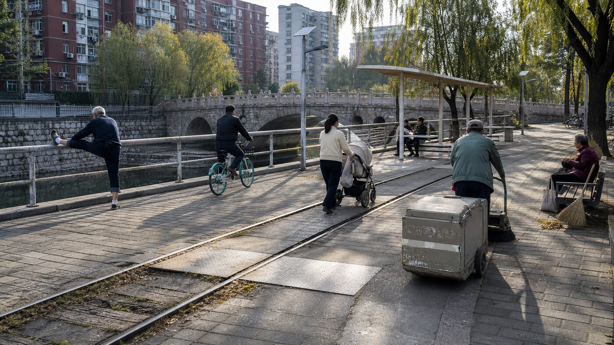
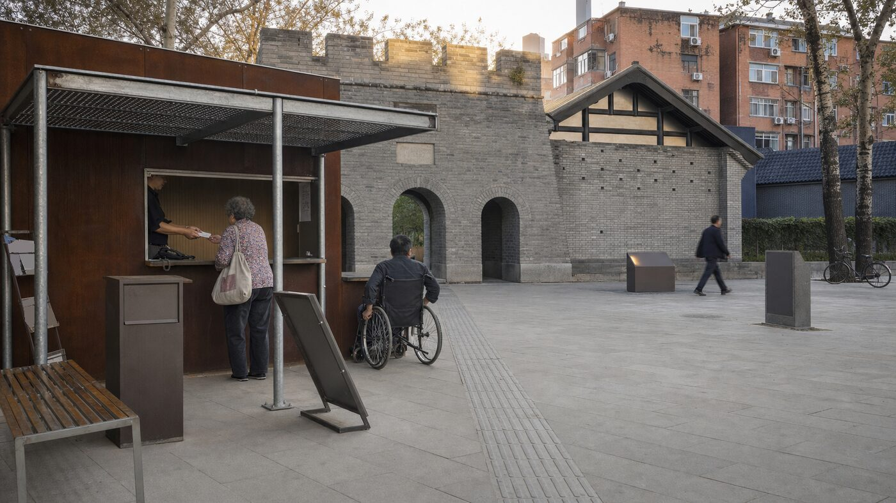
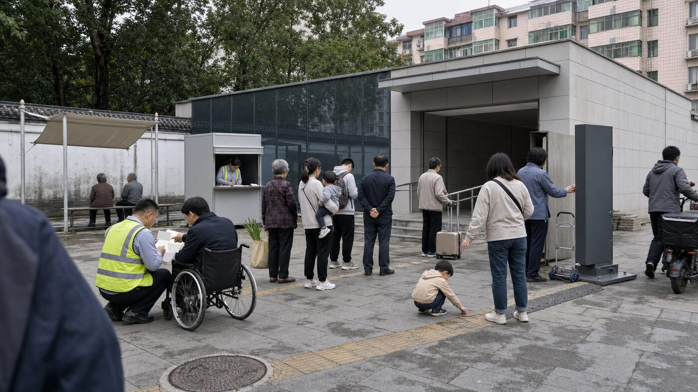
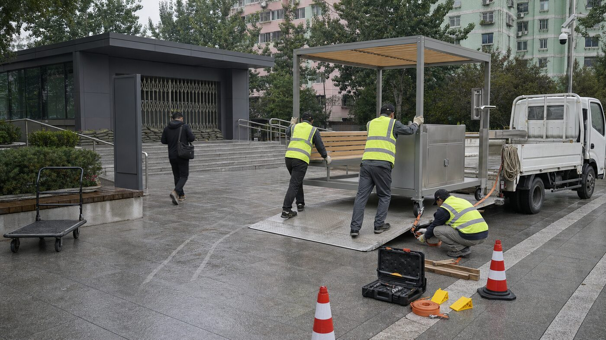
This section tabulates how four installations are put in, taken out, and checked to confirm that the prior condition has been restored.
Only components already named on this page are listed; every dimension, location, and method remains a candidate pending professional review.
| Component | Dimension Basis (Candidate) | Assembly / Removal | Restoration Acceptance |
|---|---|---|---|
| Removable pad over heritage rails | Candidate · professional review pending | Lay across the heritage rails; the component is removable | Remove the pad and retest the rail-level difference; accessibility, heritage, and operations review required |
| Trial stop post with mushroom emergency-stop button | Candidate · professional review pending | Trial placement and removal method pending professional review | Restore the prior condition; location, approval, and operations responsibility pending professional review |
| Lightweight terminal on a quick-release flange | Candidate · professional review pending | Set on a quick-release flange; removal method and retirement cover pending review | Human service windows and seating continue; location, quantity, version, and retirement arrangement pending review |
| Arrow-screen AI component | Candidate · professional review pending | A crane removes it; everyday ground-level use and human service inside the shop remain | Retain only credible municipal utilities below ground; real levels, utilities, and construction conditions pending professional review |
This section shows how four installations connect to rails, paving, or utilities, with provisional dimensions, removal steps, and unverified site conditions.
Component dimensions are design prototypes with recalculable chains; interfaces and site dimensions are ranges or unverified items. Conceptual scale, pending survey and professional review.
Value basis: all dimensions and counts in these node drawings are design assumptions for the concept prototype, drawn from common accessibility and municipal-facility sizing practice; they describe only the relative relationships between components. None is a construction-fixed value. Formal design must follow current standards, professional review, and site measurement.
This section lists who completes each of the ten tasks without AI, how they do it, and when work stops if the human route also fails.
Every person in this table is a synthetic persona, not an interview finding.
| Scenario card | Who uses it — synthetic persona, not interview | How it gets done without AI | Stop condition if the human route also fails |
|---|---|---|---|
| G01 | Older people who do not use smartphones and community or neighbourhood coordinators. | Paper and pen, telephone, human coding, and joint meetings remain; AI does not set priorities. | The process stops if the non-AI entry fails. |
| W01 | Students and teachers, researchers, and maintenance and operations staff. | Manual instruments and fixed observation points remain; without real data, no water-quality or safety conclusion is published. | Stop if authorization or calibration is missing, or if AI issues conclusions beyond its remit. |
| R01 | Night-shift couriers and community or neighbourhood coordinators. | Formal inquiries, ledger checks, and joint field inspection remain; AI does not determine property rights. | Stop if there is no human enquiry and appeal channel. |
| R02 | Older people who do not use smartphones, wheelchair users, and carers and parents. | Users and accessibility professionals carry out human audits, while static wayfinding remains. | Stop if the slowest group fares worse, fire access is obstructed, or human enquiries fail. |
| M01 | Night-shift couriers and street-front shopkeepers. | Fixed loading windows, static parking spaces, and human guidance remain; couriers are not tracked. | Do not test until responsibility is accepted. |
| H01 | Out-of-town patients and accompanying carers. | Telephone, printed directories, and human consultation remain, without diagnosis, queue allocation, or appointment promises. | Stop if the human service window fails. |
| H02 | Out-of-town patients and accompanying carers, plus carers and parents. | A human tabletop simulation remains; no real patient data is used without hospital authorization. | Do not use real patient data or replace clinical decisions. |
| E01 | Students and teachers, and researchers. | Teachers lead with paper maps and manual instruments, without student tracking or automated grading. | AI only flags sampling quality and does not track or score people. |
| C01 | Street-front shopkeepers and community or neighbourhood coordinators. | Shopfront inventory and human interviews remain, without consumer profiling or behavioural manipulation. | Do not profile consumption or state unverified items as facts. |
| C02 | Street-front shopkeepers, night-shift couriers, and community or neighbourhood coordinators. | Human inquiry, static wayfinding, a fixed activity schedule, and a no-activity control day remain. | People make the final decision and human enquiries remain available. |
This section registers crossings, bus stops, steps, wheelchair tags, and toilets near the corridor, together with source and verification status.
OpenStreetMap community data (ODbL) · non-official survey · retrieved 2026-08-27
OSM community-mapped outline of Jing-Zhang Railway Heritage Park (way 122348403/1190723117) ±300 m
| OSM ID | Category | Key tags | Distance to line |
|---|---|---|---|
way/116927089 | Steps | highway=steps | 37 m |
way/121981773 | Steps | highway=steps | 37 m |
way/925590928 | Steps | highway=steps · tactile_paving=yes | 207 m |
way/122349988 | Steps | highway=steps | 231 m |
way/122349997 | Steps | highway=steps | 236 m |
way/122349985 | Steps | highway=steps | 238 m |
way/122349999 | Steps | highway=steps | 238 m |
way/122350000 | Steps | highway=steps | 240 m |
way/739522018 | Steps | highway=steps | 249 m |
way/1007627234 | Steps | highway=steps | 262 m |
way/122349998 | Steps | highway=steps | 277 m |
way/122349995 | Steps | highway=steps | 280 m |
way/122349994 | Steps | highway=steps | 281 m |
way/121982773 | Steps | highway=steps | 291 m |
way/121982778 | Steps | highway=steps | 294 m |
way/1047353834 | Steps | highway=steps | 296 m |
node/4703201229 | Wheelchair-tagged | wheelchair=yes | 37 m |
node/1360087386 | Wheelchair-tagged | barrier=gate · wheelchair=no | 47 m |
node/13097927117 | Wheelchair-tagged | wheelchair=no | 121 m |
node/10699314663 | Wheelchair-tagged | barrier=gate · wheelchair=yes | 143 m |
node/12468087969 | Wheelchair-tagged | wheelchair=yes | 148 m |
node/10173071022 | Wheelchair-tagged | amenity=research_institute · wheelchair=yes | 213 m |
node/6616040058 | Wheelchair-tagged | wheelchair=no | 220 m |
node/1350216506 | Wheelchair-tagged | wheelchair=no | 229 m |
node/10173071020 | Wheelchair-tagged | amenity=research_institute · wheelchair=yes | 239 m |
node/10702077765 | Wheelchair-tagged | barrier=gate · wheelchair=yes | 249 m |
node/6562541709 | Toilets | amenity=toilets | 66 m |
node/6616040057 | Toilets | amenity=toilets | 217 m |
Sample IDs
node/1367469197 · 3 mnode/1367469200 · 3 mnode/11836573372 · 7 mSample IDs
node/10029341058 · 4 mnode/1811066556 · 4 mnode/1499686367 · 14 m| OSM ID | Category | Key tags | Distance to line |
|---|---|---|---|
node/1811066556 | Bus stop | highway=bus_stop · name=Dayuncun Road North Junction | 4 m |
node/10029341058 | Bus stop | highway=bus_stop · name=Dashiqiao South | 4 m |
node/1499686367 | Bus stop | highway=bus_stop · name=Wudaokou Metro Station | 14 m |
node/1811066555 | Bus stop | highway=bus_stop · name=Dayuncun Road North Junction | 16 m |
node/1675895291 | Bus stop | highway=bus_stop · name=Wudaokou Bus Depot | 25 m |
node/1675895286 | Bus stop | highway=bus_stop · name=Wudaokou Bus Depot | 30 m |
node/13742869200 | Bus stop | highway=bus_stop · name=Qinghua East Road West Junction | 39 m |
node/2469776265 | Bus stop | highway=bus_stop · name=Wudaokou North · tactile_paving=yes | 42 m |
node/2469786645 | Bus stop | highway=bus_stop · name=Wudaokou Metro Station | 54 m |
node/9907403365 | Bus stop | highway=bus_stop · name=Zhanchunyuan West Road South Junction | 107 m |
node/9907403364 | Bus stop | highway=bus_stop · name=Zhanchunyuan West Road South Junction | 132 m |
node/9907403366 | Bus stop | highway=bus_stop · name=Zhanchunyuan West Road North Junction | 141 m |
node/2469781614 | Bus stop | highway=bus_stop | 154 m |
node/2469781615 | Bus stop | highway=bus_stop | 154 m |
node/9907403367 | Bus stop | highway=bus_stop · name=Zhanchunyuan West Road North Junction | 157 m |
node/2469781630 | Bus stop | highway=bus_stop · name=Wangzhuang Road North Junction | 159 m |
node/2469781631 | Bus stop | highway=bus_stop · name=Wangzhuang Road South Junction | 163 m |
node/9950985223 | Bus stop | highway=bus_stop · name=Dayuncun Bus Depot | 188 m |
node/9950985222 | Bus stop | highway=bus_stop · name=Dayuncun Bus Depot | 198 m |
node/10029341051 | Bus stop | highway=bus_stop · name=Dashiqiao South · tactile_paving=yes | 198 m |
node/1367489096 | Bus stop | highway=bus_stop · name=Zhichunlu Metro Station | 237 m |
node/1420957578 | Bus stop | highway=bus_stop · name=Wudaokou · tactile_paving=yes | 241 m |
node/10029341047 | Bus stop | highway=bus_stop · name=Xiwangzhuang Residential Area | 250 m |
node/10029341045 | Bus stop | highway=bus_stop · name=Xiwangzhuang Residential Area | 252 m |
node/9980842163 | Bus stop | highway=bus_stop · name=Wudaokou · tactile_paving=yes | 258 m |
node/8246976675 | Bus stop | highway=bus_stop · name=Shuangqing Road South Junction | 274 m |
node/10029341048 | Bus stop | highway=bus_stop · name=Shuangqing Road South Junction | 289 m |
node/6562541709 | Toilets | amenity=toilets | 66 m |
node/6616040057 | Toilets | amenity=toilets | 217 m |
way/116927089 | Steps | highway=steps | 37 m |
way/121981773 | Steps | highway=steps | 37 m |
way/925590928 | Steps | highway=steps · tactile_paving=yes | 207 m |
way/122349988 | Steps | highway=steps | 231 m |
way/122349997 | Steps | highway=steps | 236 m |
way/122349985 | Steps | highway=steps | 238 m |
way/122349999 | Steps | highway=steps | 238 m |
way/122350000 | Steps | highway=steps | 240 m |
way/739522018 | Steps | highway=steps | 249 m |
way/1007627234 | Steps | highway=steps | 262 m |
way/122349998 | Steps | highway=steps | 277 m |
way/122349995 | Steps | highway=steps | 280 m |
way/122349994 | Steps | highway=steps | 281 m |
way/121982773 | Steps | highway=steps | 291 m |
way/121982778 | Steps | highway=steps | 294 m |
way/1047353834 | Steps | highway=steps | 296 m |
node/4703201229 | Wheelchair-tagged | wheelchair=yes | 37 m |
node/1360087386 | Wheelchair-tagged | barrier=gate · wheelchair=no | 47 m |
node/13097927117 | Wheelchair-tagged | wheelchair=no | 121 m |
node/10699314663 | Wheelchair-tagged | barrier=gate · wheelchair=yes | 143 m |
node/12468087969 | Wheelchair-tagged | wheelchair=yes | 148 m |
node/10173071022 | Wheelchair-tagged | amenity=research_institute · name=Academy of Arts and Design · wheelchair=yes | 213 m |
node/6616040058 | Wheelchair-tagged | name=Tianshiming Eyewear Wholesale Market · wheelchair=no | 220 m |
node/1350216506 | Wheelchair-tagged | wheelchair=no | 229 m |
node/10173071020 | Wheelchair-tagged | amenity=research_institute · name=School of Environment · wheelchair=yes | 239 m |
node/10702077765 | Wheelchair-tagged | barrier=gate · wheelchair=yes | 249 m |
node/1367469197 | Crossing | crossing=unmarked · highway=crossing | 3 m |
node/1367469200 | Crossing | crossing=uncontrolled · highway=crossing | 3 m |
node/11836573372 | Crossing | crossing=uncontrolled · highway=crossing | 7 m |
node/10695574573 | Crossing | crossing=uncontrolled · highway=crossing | 9 m |
node/10695574575 | Crossing | crossing=uncontrolled · highway=crossing | 12 m |
node/10695574572 | Crossing | crossing=uncontrolled · highway=crossing | 13 m |
node/11055757015 | Crossing | highway=crossing | 13 m |
node/11848866290 | Crossing | crossing=uncontrolled · highway=crossing | 14 m |
node/1364164087 | Crossing | crossing=unmarked · highway=crossing | 15 m |
node/9332434945 | Crossing | crossing=traffic_signals · highway=crossing | 15 m |
node/6924398139 | Crossing | highway=crossing | 17 m |
node/9332434946 | Crossing | crossing=traffic_signals · highway=crossing | 17 m |
node/10695574571 | Crossing | crossing=uncontrolled · highway=crossing | 22 m |
node/10695574574 | Crossing | crossing=uncontrolled · highway=crossing | 22 m |
node/10161372772 | Crossing | crossing=traffic_signals · highway=crossing | 26 m |
node/10695574578 | Crossing | crossing=uncontrolled · highway=crossing | 27 m |
node/1367469189 | Crossing | highway=crossing | 28 m |
node/9708800684 | Crossing | crossing=traffic_signals · highway=crossing | 32 m |
node/11848804709 | Crossing | crossing=uncontrolled · highway=crossing | 36 m |
node/10161372774 | Crossing | crossing=traffic_signals · highway=crossing | 40 m |
node/12786304297 | Crossing | crossing=uncontrolled · highway=crossing | 41 m |
node/13097626171 | Crossing | highway=crossing | 42 m |
node/9859715773 | Crossing | highway=crossing | 45 m |
node/12770147876 | Crossing | crossing=uncontrolled · highway=crossing | 59 m |
node/1367469175 | Crossing | crossing=unmarked · highway=crossing | 61 m |
node/9859715766 | Crossing | highway=crossing | 61 m |
node/10695605923 | Crossing | crossing=uncontrolled · highway=crossing | 74 m |
node/10695605922 | Crossing | crossing=uncontrolled · highway=crossing | 76 m |
node/10695605927 | Crossing | crossing=uncontrolled · highway=crossing | 79 m |
node/10695605920 | Crossing | crossing=uncontrolled · highway=crossing | 84 m |
node/10695605926 | Crossing | crossing=uncontrolled · highway=crossing | 88 m |
node/10695605919 | Crossing | crossing=uncontrolled · highway=crossing | 101 m |
node/10695605918 | Crossing | crossing=uncontrolled · highway=crossing | 102 m |
node/1367428394 | Crossing | crossing=unmarked · highway=crossing | 110 m |
node/11848804708 | Crossing | crossing=uncontrolled · highway=crossing | 117 m |
node/11848804701 | Crossing | crossing=uncontrolled · highway=crossing | 123 m |
node/1367428438 | Crossing | crossing=uncontrolled · highway=crossing | 124 m |
node/1367428395 | Crossing | crossing=unmarked · highway=crossing | 130 m |
node/12770147890 | Crossing | crossing=uncontrolled · highway=crossing | 130 m |
node/11848804705 | Crossing | crossing=uncontrolled · highway=crossing | 132 m |
node/12770147893 | Crossing | crossing=uncontrolled · highway=crossing | 135 m |
node/12770147891 | Crossing | crossing=uncontrolled · highway=crossing | 137 m |
node/12770147894 | Crossing | crossing=uncontrolled · highway=crossing | 148 m |
node/1367406314 | Crossing | highway=crossing | 151 m |
node/1367428400 | Crossing | crossing=uncontrolled · highway=crossing | 156 m |
node/12770147897 | Crossing | crossing=uncontrolled · highway=crossing | 159 m |
node/12770147899 | Crossing | crossing=uncontrolled · highway=crossing | 164 m |
node/12770147898 | Crossing | crossing=uncontrolled · highway=crossing | 168 m |
node/12770171514 | Crossing | crossing=uncontrolled · highway=crossing | 168 m |
node/10893676214 | Crossing | highway=crossing | 181 m |
node/10893676206 | Crossing | highway=crossing | 183 m |
node/10893676207 | Crossing | highway=crossing | 183 m |
node/10893676208 | Crossing | highway=crossing | 190 m |
node/10161372771 | Crossing | highway=crossing | 192 m |
node/10893676212 | Crossing | highway=crossing | 194 m |
node/8093518696 | Crossing | highway=crossing | 212 m |
node/9859715785 | Crossing | highway=crossing | 222 m |
node/7006452373 | Crossing | highway=crossing | 231 m |
node/12770184047 | Crossing | crossing=uncontrolled · highway=crossing | 233 m |
node/1367428409 | Crossing | crossing=unmarked · highway=crossing | 266 m |
node/10893676222 | Crossing | highway=crossing | 286 m |
node/1367439162 | Crossing | crossing=uncontrolled · highway=crossing | 289 m |
node/9729800198 | Crossing | highway=crossing | 290 m |
node/10695574568 | Crossing | crossing=marked · highway=crossing | 298 m |
Community map data are not an official survey; an untagged facility is not necessarily absent; steps and wheelchair-inaccessible points are starting points for verification, not conclusions.
R02 still relies on human audits by users and accessibility professionals while retaining static wayfinding; this register only locates starting points for that review.
BIND-11
EVIDENCE / UNKNOWN / BOUNDARY
This section groups material into six levels according to what it can prove, then separates verified, candidate, pending, and provisional items.
Evidence has only six levels. Of nine professional layers, two are provisional and seven are missing; known, provisional, recommended, and unknown items are stated separately.
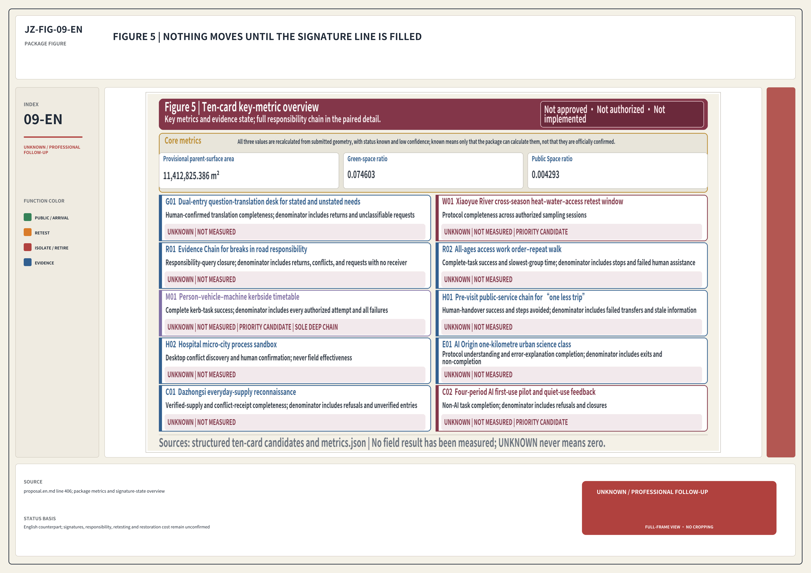
For the ten cards’ sources, calculations, and responsibility chains, see “Responsibility, Dependencies, and Handoff Detail” and `metrics.json`; for the ten cards’ spatial locations, see “One Responsibility per Area.”
This figure lists only ten field indicators awaiting measurement; all ten read UNKNOWN | not measured. Of the 28 metrics registered separately in `metrics.json`, 17 already have values: these are package baselines, geometric ratios, and simulation-audit metrics, not field-outcome results for the ten cards. See the metrics ledger at the end of this section.
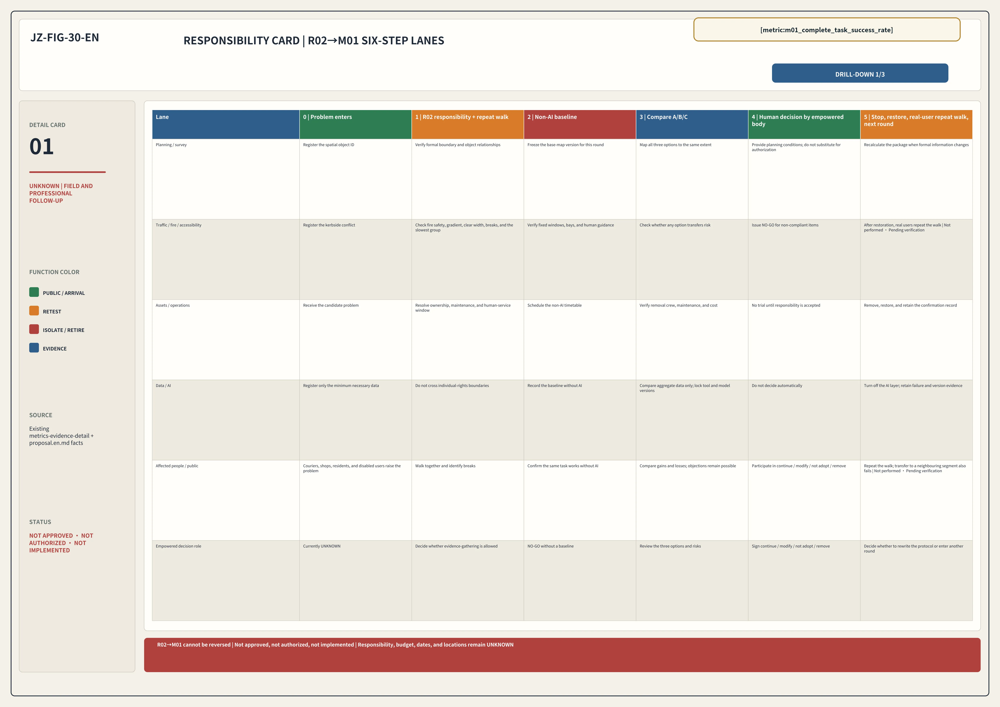
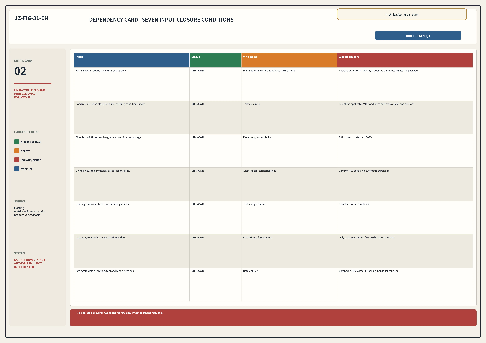
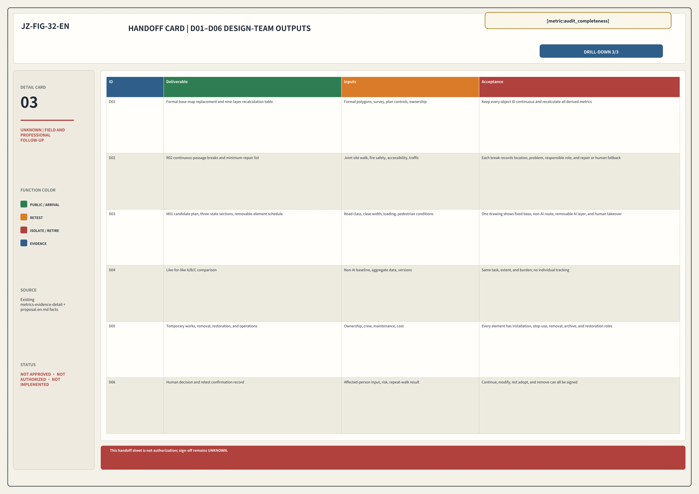
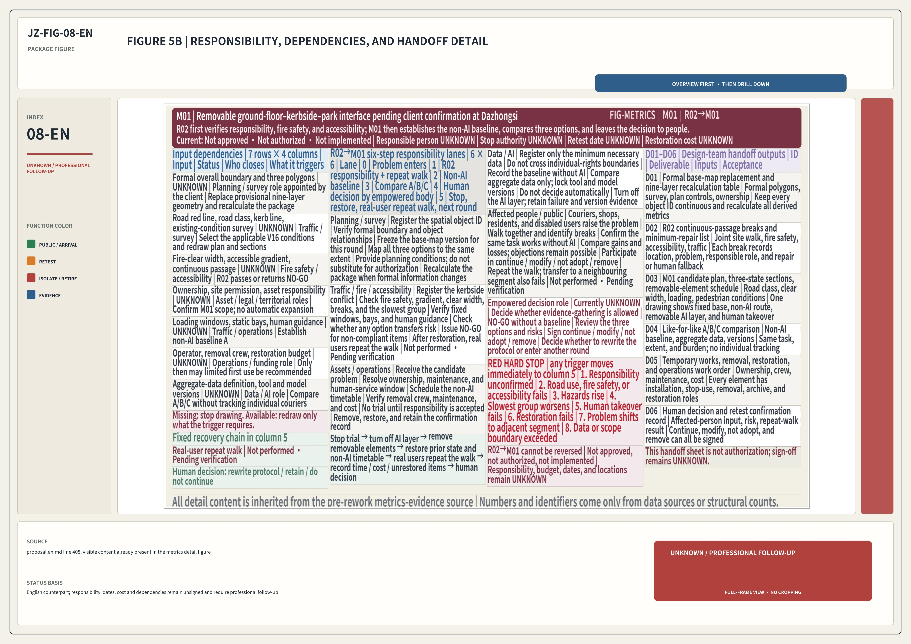
Single Evidence Ladder
2 / 9 professional layers are provisional and may only serve as provisional illustrations.
7 / 9 professional layers are missing and must not be substituted with conceptual media.
Officially announced areas of 43.6 and 11.4 km² and 368.4 ha across the three zones; zone names and order.
W01, M01, and C02 validation routes, pending field data and confirmation by duly empowered actors.
Road-use authority, fire safety, accessibility, four-period baselines, and all types of field data.
The three-level spatial diagram, user routes, and three-option trade-offs are used only for interactive explanation.
Five accounts: planning and design records formal boundaries, regulatory planning, rights, and surveys;
public foundations record transport, public-service baselines, and municipal capacity;
scenario validation records protocols, work orders, repair, and retesting;
operations and maintenance records maintainers, review dates, and retirement methods;
social coordination records affected people, human choice, and responsibility.
simulation.json of success, dispatch-schema, audit-completeness, and energy-over-budget readings for 24 offline synthetic tasks and inspection of proposed verification roles for the protocol, tool version, failure denominator, and independent reproduction; the authorized field baseline, formal protocol conditions, and real retest results remain UNKNOWN.project_budget formula “project-level scope × traceable unit rates × lifecycle and recovery costs,” the D05 / M01-6 dependencies, and the proposed sign-off format for budget, procurement, legal, land, or conflict-of-interest review; project-level funding source, budget boundary, restoration schedule, and payment responsibility remain UNKNOWN.This column states only how far the present evidence chain can be judged; it does not mean that any gate has been passed, approved, or authorized.
All 28 metrics record a formula; 17 currently have values (11 recomputable from package data, 6 citing officially published given values), and 11 remain controlled UNKNOWN, each with its formula and trigger condition; none of the six gates was skipped.
This page is a concept gallery and interactive work, not an approved implementation proposal. The 23 bilingual formal-figure pairs remain conceptual recommendations and evidence navigation, not statutory planning drawings.
APPENDIX / DATA + COMPLIANCE
This section gathers the recorded data, gaps in precise boundaries and professional materials, and the current verification status of each item.
This appendix consolidates frozen data, unresolved items, and verification status; UNKNOWN means pending confirmation from formal materials.
Important Boundary Disclosure: Provisional Boundary = rough provisional geometry, not an Official Planning Boundary; after formal boundaries arrive, all nine layers, three metrics, and related text and figures must be recalculated.
The current overview comprises nine layers: site_boundary, key_areas, land_use, roads, green_space, public_space, buildings, constraints, and phasing. It is a recalculable formal candidate set, not statutory regulatory planning or engineering output.
The Coordinated Research Area is about 43.6 km², the Overall Design Area about 11.4 km², and the three key areas total about 368.4 ha. The announced areas are known; precise boundaries remain UNKNOWN.
The three key areas are Zhongzhiyuan AI Independent Innovation Acceleration Area, Beijing AI Origin Community, and Dazhongsi AI Industry Cluster. Only provisional envelopes are available; official extents and precise polygons are UNKNOWN.
The land-use layer contains 983 features, provisionally classified from OSM base material with unclassified residual surfaces closing the parent surface. It supports candidate topology only; formal existing land use and statutory regulatory planning are UNKNOWN.
The roads layer contains 564 OSM major-road centrelines used only as base material for road and interchange relationships. Road control lines, kerb engineering alignments, and formal transport plans are UNKNOWN.
The green-space layer contains 124 features and the Public Space layer 20. Each unions a conservative subset of OSM-mapped existing features with deduplicated B area-wide conceptual intervention surfaces. Confidence in the current method is low; recalculate after formal boundaries or existing-condition materials arrive.
The buildings layer contains a conservative subset of 1,699 OSM Building Footprints and represents only the mapped base. Building use, rights, height, structural safety, and Demolish–Renovate–Retain conclusions are UNKNOWN.
The phasing layer contains four features: W01, R02→M01, and C02 are first-phase candidate nodes, while the B residual surface is a later placeholder. Implementing entity, approval route, duration, and start date are UNKNOWN.
The ten fixed scenario cards are G01, W01, R01, R02, M01, H01, H02, E01, C01, and C02. W01, M01, and C02 are priority validation candidates; only M01 develops the deepest chain of responsibility. None of the ten cards is authorized or tested.
All three values are recalculated from submitted geometry, with status known and low confidence; known means only that the package can calculate them, not that they are officially confirmed.
agent.1 through agent.6 correspond to the six official tasks. Each block shows frozen content, related figures and cards, and evidence status without presenting them as complete. The ten scenario cards support task coverage; no eleventh card is added.
All four local official gates have passed, and self_check is formal-review-ready. The exact boundaries of the three key areas remain provisional minor items pending official exact polygons. formal-review-ready only means the package may enter formal review; it does not mean it has been submitted, accepted for processing, selected, or implemented.
The package source register lists 23 primary sources for eight cases, and all 8/8 cases have at least two sources each. They support case identity, factual paraphrase, and mechanism comparison only; they do not grant rights to reuse visual assets or show that Jing-Zhang already has equivalent facilities, authorization, or outcomes.
The rough provisional boundary remains for provisional use only.
Page concept images were generated with OpenAI image_gen (GPT Image 2) from project-authored prompts and serve as conceptual explanation only. The Logo has been replaced with a project-drawn vector that contains no Lovart conversion path; the superseded version is not included in the package. Neither the concept images nor the Logo establishes trademark clearance.
The page depends on no remote fonts: Chinese glyphs come from two Source Han Serif SC Regular subsets embedded as data URIs in the bundled visual/assets/offline-cjk-font.css, renamed under the SIL Open Font License 1.1 and redistributed with the package; other glyphs fall back to local system fonts.
OSM-derived content retains © OpenStreetMap contributors / ODbL 1.0 attribution.
The frozen assumptions table has 16 items covering official boundaries, regulatory planning, road control lines, rights, buildings, municipal systems, authorization, operations, cost, funding, implementation sequence, author identity, and the term "cluster." Items without corresponding formal materials remain UNKNOWN.